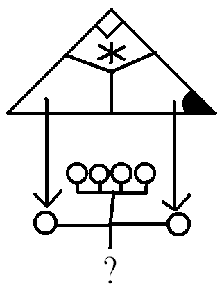

[已完結] 【DRYH+HR】【非官方酒吧團】金銀雙匙的幻境臨摹
| 凱琳 「傍観者」  初等部白緞生
| 101☆大中小簡繁發表於 6-10-2012 09:22 PM 只看該作者 |
| 凱琳 「傍観者」 初等部白緞生
| 101☆大中小簡繁發表於 6-10-2012 09:22 PM 只看該作者 引用:原文由 Edward_Knave 於 6-10-2012 09:01 PM 發表 死人嗎？ －－是吧。肯定不是我們這年代的。 引用:原文由 Edward_Knave 於 6-10-2012 09:01 PM 發表 笑笑，他鬆開了手。 「有什麼事呢？該不會要打吧？」接著開始猜測兩個武士現身的用意。「…我不擅長打架啊。」 －－ 其實我想試試看不放，ＧＭ這樣會提高死亡率嗎？（什麼 |
玄子 小學部黃綾生
| 102☆大中小簡繁發表於 6-10-2012 09:42 PM 只看該作者 武士+雕像的引用 引用:「吼－－－！給我放開！」一陣洪亮的聲音忽然從黑色的珠子響出，只見雙珠之間的注連繩忽然折斷，一團黑泥從皮爾諾的掌中流出，近乎源源不絕。 「我再說一次：給我放手！」穿著生鏽鎧甲的武士衝著皮爾諾大喊，現出殺氣。 引用:「誰！」孟斯特大吼，雙腳微微站開，進入備戰姿態。 「所以這就是你所說的『掌管紕漏的存在』？」玄子望著圖託理雅爾的眼神不算友好。 他瞇了瞇眼，續道：「別告訴咱……它們具攻擊性。」 因殺氣而微微發顫的玄子嘗試跟身周的風建立短暫的共嗚，好為可能出現的戰鬥作準備。（「靠。」他低喝。） 同時玄子緩緩地移到皮爾諾身旁一米左右的地方，警戒地盯著武士，喉嚨中發出幾聲獸類(?)獨有的嘶吼。他不可能任由同為犬類(?)的皮爾諾有甚麼意外發生。 引用:「啊！」皮爾諾被嚇了一跳，但沒有放手。 引用:「好可怕－－如果我不放是不是會死啊？」 「不用打當然省事，但要打的話……」他往旁邊孟斯特所在的地方瞄了瞄。「保護好你家主子吧。」 - 場外： 增加死亡率(姆指(何 [ 玄子 於 6-10-2012 09:50 PM 重新編輯過 ] |
北楼真茂 小學部藍綵生
| 103☆大中小簡繁發表於 6-10-2012 09:42 PM 只看該作者 引用:「喔！是這樣的規則！」孟斯特突然說道，「我可以試試看嗎？」 到這程度應該沒理由解不出來了吧，就交給他吧。 於是吉坦便轉頭過去看看剩下的兩個機關分別破解的如何， 兩個鎧甲跟雕像的引用 引用:「吼－－－！給我放開！」一陣洪亮的聲音忽然從黑色的珠子響出，只見雙珠之間的注連繩忽然折斷，一團黑泥從皮爾諾的掌中流出，近乎源源不絕。 一旁一個不熟悉的聲音大聲咆嘯，吉坦轉過頭，發現原本裝置良好的機關都已經不見蹤影，反倒是一旁的地板上出現了兩個東方模樣，一黑一白的盔甲，手上拿著奇形怪狀的劍，不知怎的殺氣騰騰。 然後吉坦開始想起圖託理雅爾說過的話， 引用:解開過後就會放出『掌管紕漏的存在』 「孟斯特！」吉坦忽然大聲的一呼，「停下！不要解開那個機關！」 但是吉坦回過頭一看，太遲了，孟斯特已經站離了機關，想必已經解完機關之謎了。 ﹍﹍七對三，戰力分析上來說，數量是我方的優勢，但是﹍﹍ 吉坦按下了耳麥的按鈕，『呼叫紗姬，這裡是吉坦，樓下有麻煩，盡快下樓！』 [ 北楼真茂 於 6-10-2012 09:53 PM 重新編輯過 ] |
| 凱琳 「傍観者」 初等部白緞生
| 104☆大中小簡繁發表於 6-10-2012 09:50 PM 只看該作者 引用:原文由 玄子 於 6-10-2012 09:42 PM 發表 「所以說一定要打了啊…」 然後他從口袋拿出一副塔羅牌，洗了洗之後抽了一張。 「塔嗎－－也對，這張小卡片沒什麼攻擊力呢。」嘆了口氣，把塔羅收回去，準備觀戰。 引用:原文由 玄子 於 6-10-2012 09:42 PM 發表 「別傻了，我攻擊力是負值啊。」他笑了笑，「而且再怎麼看，他都不需要我保護吧。」 |
| 玄子 小學部黃綾生
| 105☆大中小簡繁發表於 6-10-2012 09:59 PM 只看該作者 引用:「我家主子？」皮爾諾對於這個詞彙感到陌生。 他打量著皮爾諾，再三判定下終於不得不承認……這紅瞳的看起來不像相同的物種啊…… 「唔。」玄子現在很有扶額的衝動，但礙於武士和雕像的關係沒有亂動。 「你當咱甚麼都沒說過吧……」 - 場外： (大爆笑)(對不起咱笑點在正常人所不理解的地方) 這個XDDDDDDDDDDDDDDDDD 誤解太有趣了XDDDDDDDDDDDDDDDDDDDD (大爆笑 完全是語言不通啊這兩隻XDDDDD(狂笑 這種要orz五體投地的感覺XD |
| 凱琳 「傍観者」 初等部白緞生
| 106☆大中小簡繁發表於 6-10-2012 10:03 PM 只看該作者 引用:原文由 玄子 於 6-10-2012 09:59 PM 發表 「從一開始我就不知道你在說什麼啊。」笑得很燦爛。 －－ 這也是我的心聲啊ＸＤＤＤ（笑翻 所以這對是要搞什麼啊ｗｗｗｗｗｗｗ |
| 玄子 小學部黃綾生
| 107☆大中小簡繁發表於 6-10-2012 10:11 PM 只看該作者 引用:「？」皮爾諾歪頭，然後很爽快的說出了自己的心聲。 「咱們其實是兩個時空的人吧？是吧？絕對是吧！」他只剩下吐嘈的力氣了。 - 場外： 咱、咱不行了噗ＸＤＤＤＤＤ(腹筋崩壞 然後抱歉咱又把題扯遠了囧" 誰可以幫忙拉回來大感謝// m(_ _)m [ 玄子 於 6-10-2012 10:13 PM 重新編輯過 ] |
| 凱琳 「傍観者」 初等部白緞生
| 108☆大中小簡繁發表於 6-10-2012 10:21 PM 只看該作者 引用:原文由 玄子 於 6-10-2012 10:11 PM 發表 「欸，我們同樣站在這裡吧？哪來不同時空？」 兩人之間的話題繼續微妙的偏差中…。 －－ 在ＧＭ開始下一輪劇情前先歡樂一下吧ＸＤＤ（住手） 一進入劇情恐怕就ｗｗｗｗｗｗｗｗｗ |
| 藍刺蝟 掛機刺蝟娘  新手輔導員
| 109☆大中小簡繁發表於 6-10-2012 10:27 PM 只看該作者 引用:原來如此，完成謎題之後就放看門狗的意思嗎？ 孟斯特聽到吉坦的話，也回想起圖託理雅爾的話。 銬！是這個意思！ 不過…… 「少年啊，」孟斯特對圖託理雅爾說道，「這也是你的『模擬』嗎？」 此時他發現雕像消失了。 如此，大概也化身為某種活物，正在我們四周吧。 不用緊張，皮爾諾大概是握住了珠子吧。雕像的變化大概始於我的那一拍。旁邊的白色武士做出戒備的動作而非進行攻擊，顯然他們原本的目的並非擊傷我們。 那麼，這個盒子又會冒出甚麼呢？ 突然，孟斯特感到不妙。 糟，這裡可有８個盒子啊！ 難道每個盒子裡面都有一隻－－甚麼東西？ 為了應付可能的戰鬥，孟斯特有意無意的移動，企圖繞到武士身側（從上看順時針） 此時皮爾諾和玄子的一搭一唱，似乎能為眾人爭取不少時間－－至少孟斯特是這樣想的，他因此並沒有企圖打斷他們。 －－－－－－場外線 我太急躁了（低頭  [ 藍刺蝟 於 6-10-2012 10:40 PM 重新編輯過 ] |
Hazmole 新手輔導員
| 110☆大中小簡繁發表於 6-10-2012 10:37 PM 只看該作者 引用:與此同時，另一顆白珠也冒出金光，並滲出白煙。白煙散去，只見在同一地點站著一名金鎧武士。 ──但說他少根筋卻也不對，哈絲默爾藏在大掛裡的右手已經扣住了一瓶迷幻藥，隨時準備扔出。雖然感覺上應該是不會有任何作用。 引用:「對了，是『掌管紕漏的存在』啊！」到現在某人才像想起什麼似的恍然大悟。 ──還不知道有沒有攻擊性呢？ 看金甲武士還沒有動作，哈絲默爾忽地福至心靈(?)，起身往金甲武士走去。 「嗯？武士大人、金閃閃的戰士──『掌管紕漏的存在』，是嗎？是你們嗎？啊啊，既然掌管著紕漏，那即是渴望著在最終的毀滅之前獲得糾正，不是嗎？──不然，何苦苦守著不正確的錯誤，不然，一切都將屈服於那偉大的愚痴瘋狂之中，那又何必、何必，為了那終將毀滅的不足，為了錯誤奴役呢？」 「哈哈，不是嗎？掌管著紕漏本身便是一種紕漏，紕漏即是不完美，有誤的，掌管錯誤的存在不可能會是正確的，不然，若掌管錯誤的會是正確的，那麼所掌管的錯誤便不是錯誤而是正確呢？若所掌管的錯誤實為正確，無可否認，便不能稱為掌管無理，而那自身也將成為錯誤──這是矛盾的螺旋，那麼，那麼，又何苦將自己逼入矛盾的苦杯之中？」 從生鏽鎧甲的武士能說話這個事實，哈絲默爾判斷眼前這個武士般的物體能夠溝通。 ──所以，哈絲默爾決定先下手為強，在對方行動前，用自己最擅長的言語誘導，催眠對方，灌輸「你是我們這一邊的」這個觀念。 ＝＝＝＝ 開始垃圾話，看ＧＭ要不要給異能【催眠（３）】判定，因為不確定是不是真的敵人我就先不擲骰，搞不好只是個ＮＰＣ。 話說我每次不好的預感都繪成真啊（抱頭）──先是湯裡有下藥、村子裡都是食人族，接著是碰珠子會出問題── 看來這次也許真的是戰鬥沒錯。 [ Hazmole 於 6-10-2012 10:39 PM 重新編輯過 ] |
| Edward_Knave 以「書記」自稱者  初等部藍綵生
| 111☆大中小簡繁發表於 6-10-2012 10:56 PM 只看該作者 引用:玄子被兩個武士和雕像嚇了一跳，馬上往後退了好幾步。 引用:「少年啊，」孟斯特對圖託理雅爾說道，「這也是你的『模擬』嗎？」 圖託理雅爾聽見玄子與孟斯特的懷疑，隨即傻笑，並作解釋。 ～～～～～～ 註：教學用機體每次攻擊成功，就會為角色加上「命中標記」，有兩個命中標記者再次被命中則須作一次理念判定，同時標記消除。 換言之，每三次承受教學用機體的攻擊則觸發一次理念判定。 因此導致理念判定兩次失敗者不會再因此作出理念判定。 規則更新：習得異能不會觸發理念判定。惟若異能值耗盡，則以理念值取代異能值消耗，此消耗同時適用於同一個體內的一切人格。 ～～～～～～ 引用:「喔！是這樣的規則！」孟斯特突然說道，「我可以試試看嗎？」 箱形機關上的中軸屏幕翻轉分別現出「+1」、「-6」、「+9」，再翻回「+1」、「-6」、「+9」的狀態。 旋鈕與屏幕相繼脫落，八個小箱各自散開，並排成十字架的形狀：其中四箱循縱向排列，其餘四箱則圍住第二層的箱子。 十字架在半空中不斷轉動，愈轉愈快。 另一方面，倒懸的半身像忽然移到天花板的中央，並分身為二。 兩尊一模一樣的半身像忽然提起吹箭管，一道細長的紫光從箭管放出，在地上投射出兩點紫色的光點，不斷遊移。 引用:＜＜皮爾諾與玄子的忠犬心聲(？)＞＞ 引用:「嗯？武士大人、金閃閃的戰士──『掌管紕漏的存在』，是嗎？是你們嗎？啊啊，既然掌管著紕漏，那即是渴望著在最終的毀滅之前獲得糾正，不是嗎？──不然，何苦苦守著不正確的錯誤，不然，一切都將屈服於那偉大的愚痴瘋狂之中，那又何必、何必，為了那終將毀滅的不足，為了錯誤奴役呢？」 「……吾欲名之為『原始』－－盤古初開伊始，自然存在之物。守護原始之道，自是天下人職責所在，望君可解。」武士提起殘劍，向哈絲默爾行禮。 「各位準備好的話，我們就開始教學的第二階段吧。 我的預感告訴我，您們應該會在短時間之內集合。」圖託理雅爾退後幾步，向參與測試的七人喊道。 ～～～～～～～ 一樓平面圖(如有錯誤請提出更正) ┌───┬───┬──┬────┬───┬──┬───┬──────────────────┬──┬────────────────┐ │╲ │ ╱│██│ │ │ │ │██│ │ │ ╲ │ ╱ │██│ │ │ │ │██│ │ │ ╲│╱ │██├ ──┤ │ ├───┤ │██│ │ ├───█───┤██│ │ │ │ │██│ │ ├───┼───┤██│ │ │ │██│ │ ├───┼───┤██│ │ │ │ │██│ │ ├───┼───┼──┼ ──┴───┘ └┬──┤ └──┘ │ ├───┼───┤┌┐│ │┌┐│ │ │ ├───┼───┤│││ ││││ │ │ ├───┼───┤└┘│ │└┘│ │ │ ├───┼───┴──┴───………………┬┬┬┼┬┬┼──┬───佈───告───欄───┬──┴────── │ ├───┤ │││││││ └───────────────┘ γ │ │ │ │││││││ │ │ │ │││││││ ╬ │ │ █────────────────█┴┴┴┴┴█ △ β │ │ η │ │ δ ▲ ╭─╮ │ │ ○ ○ α ○│ │ ┌──┤ │ ╭───╮ ε │ │ │ │ │ │ │ ○│ │ │ │ │ ○ ○ ○ ○ ○ ○ ╰───╯ │ │ │ │ │ ╭───╮ ╭───╮ ╭───╮ ○ ○ ○│ │ │ │ │ │ │ │ │ │ ◎ │ │ │ │ ╰───╯ ╰───╯ ╰───╯ ○│ │ │ │ 大 ○ ○ ○ ○ ○ ○ ○ ○ ○ ○ │ │ │ │ ╭───╮ ╭───╮ ○│ │ │ │ 門 │ │ │ │ │ │ │ │ ╰───╯ ╰───╯ ○│ │ │ │ ○ ○ ○ ○ ○ ○ ○ ○ ○ ○ │ │ │ │ │ ╭───╮ ╭───╮ ╭───╮ ○│ │ │ │ │ │ │ │ │ │ │ │ │ │ │ │ ╰───╯ ╰───╯ ╰───╯ ○ ○ ○│ │ │ │ │ ○ ○ ○ ○ ○ ○ ╭───╮ │ │ │ │ │ │ │ ○│ │ │ │ │ ╰───╯ │ │ │ │ │ ○ ○ ○│ │ │ │ │ │ │ │ │ │ ╭─┬─╮ ○│ │ │ │ │ █───────────────█┬┬┬┬┬█ │╲│╱│ ├─┤ │ │ │ │ │││││││ ├─┼─┤ ╭─╯ │ │ │ │ │ │││││││ │╱│╲│ ╭─┤ │ │ │ ├───┤ │││││││ ╰─┴─╯╭┬╯█╰╮ │ │ │ ├───┼───┬──────── ┼┴┴┴┴┴┴─ ┬ ──────────────┬╯╰╮██│ │ │ │ ├───┼───┤ │ │ │ │█╭╯ │ │ │ ├───┼───┤ │ │ │ ╰─╯ │ │ │ ├───┼───┼──┐ │ │ ┌──┼────────┘ │ │ ├───┼───┤██│ │ │ │██│ │ │ ├───┼───┤██│ │ │ │██│ │ │ ├───┼───┤██│ │ │ │██│ │ │ ├───█───┤██│ │ │ │██│ │ │ │ ╱│╲ │██│ │ │ │██├─────────────┘ │ │ ╱ │ ╲ │██│ │ │ │██│ │ │╱ │ ╲│██│ │ │ │██│ │ └───────┴──┴────────┴──────────┴──────────────┴──┴────────────────┘ α：皮爾諾 β：孟斯特 γ：玄子 δ：哈絲默爾 ε：奧茲．梁 η：吉坦．戴斯 ◎：圖託理雅爾 ★：教學用機體 △▲：武士 ╬：十字架(？) 二樓平面圖(如有錯誤請提出更正) ┌───┬───┬─┬─────┬────┬───┬────┬───┬────┬───┬───┬─┬──┬──┬──────────┐ │╲ │ ╱│ │ │ ╲╱ │ │ ╲╱ │ │ ╲╱ │ │ │□│ │ │ │ │ ╲ │ ╱ │ │○ │ ╱╲ ├───┤ ╱╲ ├───┤ ╱╲ ├───┤ │□│ │ │ │ │ ╲│╱ │ │ └────┤ ○ └────┤ ○ └────┤ ○ └──┬┴─┤ │ │ │ ├───█───┼─┴┐ │ │ │ │██│ │ │ │ ├───┼───┤██├───┐ │ │ │ ζ │██├ ┴ ┤ │ ├───┼───┤██│ │ ├──┐ ├──┐ │ │██│ │ │ ├───┼───┤██│ │ │ │ │ │ │ │██│ │ │ ├───┼───┤██│ │ │ │ │ │ │ ┌───┤██│ ┌──┤ │ ├───┼───┤██├───┤ ├──┤ ├──┤ │ │╲ ╱│██│ │ │ ├───┼───┤██│（□）│ │□□│ │□□│ │ │╱ ╲│██│ │ │ ├───┼───┴──┴───┴─── ┼┬┬┼┬┬┐ ┴──┴─── ┴ ┴───┴──┴ ├──┘ │ ├───┤ │││││││ │ │ │ │ │││││││ │ │ │ │ │││││││ │ │ │ █────────────────█┴┴┴┴┴█────────────────────────█ │ │ │ │ │ │ │ │ │ │ │ │ │ │ │ │ │ │ │ │ ２／Ｆ ◇ ◇ │ │ │ │ │ │ │ │ │ │ │ │ │ │ │ │ │ │ │ │ │ │ │ │ │ │ │ │ █───────────────█┬┬┬┬┬█───────────────█ │ │ │ │││││││ │ │ │ │ │││││││ │ │ ├───┤ │││││││ │ │ ├───┼───┬──┬ ─────┼┴┴┴┴┴┼─┬──┬─────── ┴┬──┬──┐ │ ├───┼───┤██│ │＞＞╳＜＜│□│ │ │＞＜│██│ │ ├───┼───┤██│ ├─────┤□│ │ ├──┤██│ │ ├───┼───┤██│ │ ├─┼──┘ │╲╱│██├────┐ │ ├───┼───┤██│ │ │╳│ │╱╲│██│ │ │ ├───┼───┤██│ ┌─────┬ ──┼─┴────┐ ├──┤██│ │ │ ├───┼───┤██│ │ │ │ │ │＞＜│██│ ──┤ │ ├───█───┼─┬┘ │ │ │ │ ├──┴──┤ │ │ │ ╱│╲ │ │ │ │ │ │ ○ ○ ○ └─────┘ │ │ │ ╱ │ ╲ │ │○ ├─────┤ ├──────┼───────┐ │ │ │ │╱ │ ╲│ │ │（□╳□）│ │（□）（□）│ │ │ │ │ └───────┴─┴───┴─────┴─────┴──────┴───────┴─────────┴──┴───────────┘ ζ：奈良原紗姬 ◇：半身像 (第十一帖：圖託理雅爾教學關卡．友善的假想敵) [ Edward_Knave 於 6-10-2012 10:59 PM 重新編輯過 ] |
| 凱琳 「傍観者」 初等部白緞生
| 112☆大中小簡繁發表於 6-10-2012 11:07 PM 只看該作者  引用:原文由 Edward_Knave 於 6-10-2012 10:56 PM 發表 引用:原文由 Edward_Knave 於 6-10-2012 10:56 PM 發表 皮爾諾說出應該會令眾人驚爆的話，向鏽甲武士表示友善的態度…或者是投降的態度。 皮爾諾 (凱琳)的「所謂裝小孩基本判定」擲了「3 d 6 + 0」，擲出「2、6、6」，總合為「14」。 皮爾諾 (凱琳)的「習得異能：【裝小孩】」擲了「2 d 6 + 0」，擲出「5、6」，總合為「11」。 心理修正+1。 －－ 那個所謂加值應該是看哪個？ＸＤ心理嗎？ 好吧我全部擲出來了，加值交給ＧＭ可以嗎（你 [ 凱琳 於 6-10-2012 11:13 PM 重新編輯過 ] |
MADAO 小學部白緞生
| 113☆大中小簡繁發表於 6-10-2012 11:16 PM 只看該作者 引用:原文由 藍刺蝟 於 6-10-2012 07:20 PM 發表 轉眼見孟斯特迅速地解開剩下兩道數字，破解了機關，心道：『哈哈……果然還是年輕人有辦法。』 引用:原文由 Edward_Knave 於 6-10-2012 09:01 PM 發表 奧茲一驚，不由得向後倒退半步。「幹、幹什麼？這兩傢伙想動手嗎？」不自覺握緊拳頭，擺出一副從沒打過架的菜鳥架式。 引用:原文由 Edward_Knave 於 6-10-2012 10:56 PM 發表 引用:原文由 Edward_Knave 於 6-10-2012 10:56 PM 發表 --場外-- 出門回來居然通通都解完了，你們也太威XD |
| Hazmole 新手輔導員
| 114☆大中小簡繁發表於 6-10-2012 11:35 PM 只看該作者 引用:「……吾欲名之為『原始』－－盤古初開伊始，自然存在之物。守護原始之道，自是天下人職責所在，望君可解。」武士提起殘劍，向哈絲默爾行禮。 引用:「各位準備好的話，我們就開始教學的第二階段吧。 ＝＝＝＝ 其實我想等紗姬（移動火藥庫）下樓再敲金甲武士的頭。 奧茲大叔ｗｗｗ，剛還在想你回來會不會被超展開嚇到……總之人齊了就好 |
| 藍刺蝟 掛機刺蝟娘 新手輔導員
| 115☆大中小簡繁發表於 6-10-2012 11:35 PM 只看該作者 引用:「呃……確實如此。因為是模擬機體，所以即使他們會作出攻擊，理論上也不會構成傷害，只是每一次攻擊命中，攻擊的部位就會發光而已。」 引用:旋鈕一如孟斯特所期望的作出反應。 好，至少知道這些傢伙沒有惡意。 此時旁邊的箱子分解，並出現了快速旋轉的十字架。 是考驗迴避能力嗎？那樣子撞人應該很痛吧。 另外由於雕像的大動作，孟斯特此時終於注意到了。 在空中……考驗身體與感官的協調力？照這個樣子，碰到光線就是擊中吧。 我看看……先取得…… 他於是慢慢地向吧台走去。 引用:「主子嗎……至少閣下知道自己的主子是誰，但是我不知道我所侍奉的是誰人……」鏽甲武士攤手苦笑道。 「那麼，我想你還沒說清楚這點……」孟斯特對圖託理雅爾說道，「到底呢，這個試驗為何必須有戰鬥的要素？你們到底打算做出甚麼樣的－－研究？」 「老師」都是武士了，那不會是太斯文的活動吧。應該會牽涉到戰鬥。 既然對方擺明這是教學，孟斯特也就不試圖迴避戰鬥了。 那女軍官應該很快就會發現異樣吧。不管有沒有人呼叫她。 －－－－－－場外線 明天不知道幾點才能回文，可能很晚 [ 藍刺蝟 於 6-10-2012 11:40 PM 重新編輯過 ] |
wesly 小學部白緞生
| 116☆大中小簡繁發表於 6-11-2012 01:10 AM 只看該作者 「好了！總算又找到兩張紙條！」紗姬將紙條放進口袋，接著走出房間。 她突然聽見吉坦的求救聲，二話不說立刻快步走出房間趕往現場。 『這裡是紗姬！我立刻下去，待在那裡！不要……。』正當紗姬邊通訊邊下樓時，她看見一樓的兩名武士。 紗姬感覺不對勁，立刻將手槍收起並迅速亮出戰車砲，接著衝到與兩武士一段距離之後用沉穩、冷酷的警戒語氣道。 「你們是誰，想要幹什麼!?都不准動，把手放在我能看見的地方！」這時紗姬已經進入了預備射擊姿勢，隨時都能對它們開火。 [ wesly 於 6-11-2012 01:17 AM 重新編輯過 ] |
| 北楼真茂 小學部藍綵生
| 117☆大中小簡繁發表於 6-11-2012 03:30 AM 只看該作者 引用:「呃……確實如此。因為是模擬機體，所以即使他們會作出攻擊，理論上也不會構成傷害，只是每一次攻擊命中，攻擊的部位就會發光而已。」 同一時間，吉坦在包裡的右手已經套上了指虎，並且抓著另一個指虎出來，在背後裝上左手的指虎，然後，將兩手插入外套口袋，繞著兩套盔甲旁邊走動。 ﹍﹍既然不得不打的話，當然是要先下手為強了，不過﹍﹍ 吉坦看向紗姬，她正舉著一個深綠色的長筒狀物，雖然吉坦沒看過那種東西，不過能夠合理的推測那東西是武器；然後吉坦看著走到吧台後面的孟斯特，手還是擺在衣物內，果然偵探最好的夥伴除了放大鏡之外就是槍嗎？吉坦環看來一下四周，沒想到除了在面前的白色箱子跟兩個鎧甲，天花板上還有一個穿著類似獵戶的雕像，看來那也是機關生出來的東西。 不知道敵人攻擊行徑之前，還是不要隨意下手比較好﹍﹍ 於是吉坦定睛一看兩個盔甲，除了在等著對方先行進行之外，也是在看著要進攻哪些部位會比較有效，或是，哪些地方可以順手拿到些好處。 ＝＝＝＝＝＝＝＝＝＝＝＝場外 可以請GM提示假如我對金甲、黑甲跟雕像(如果到地上的話)進行偷竊，分別會有幾顆痛苦骰對抗嗎？ |
| 凱琳 「傍観者」 初等部白緞生
| 118☆大中小簡繁發表於 6-11-2012 07:18 AM 只看該作者 引用:原文由 wesly 於 6-11-2012 01:10 AM 發表 應該… －－我都沒底了。 －－ 大家真的忘了某個心智不成熟的還在武士先生（為什麼連背後靈都這樣叫了）旁邊啊ｗｗｗｗｗ？ |
| Edward_Knave 以「書記」自稱者 初等部藍綵生
| 119☆大中小簡繁發表於 6-11-2012 08:49 PM 只看該作者 序章 圖託理雅爾教學
Q&A 提問者：藍刺蝟 1. 請問吧台後方的櫃子（放酒瓶的地方）可以打開嗎？ 答：無法直接打開，但是可以看見內裡的東西。 2. 若使用酒瓶作為武器，能夠有加值或額外的好處嗎？ 答：負修正值抵銷，在攻擊成功後的下一回合額外構成1點失血傷害。 3. 武士是穿著怎麼樣的鎧甲？有哪些明顯露出皮膚的部份（例如，面部）？ 答：與日本武士的甲冑類似。沒有明顯露出皮膚的部份，但是消災武士(鏽甲武士)的鎧甲上有不少的圓形凹孔。 4. 再問個比較無關的－－酒吧的地板是木製的嗎？ 答：是。 ～～～～～～～～～ 引用:「……哼哈哈，古板而陋俗的狂信守衛嗎？」哈絲默爾對金甲武士的話嗤之以鼻，卻沒想過自己有沒有立場說別人「狂信」。 引用:「教學的第二階段…戰鬥嗎？不會吧？看武士先生人挺好的樣子。」 因為我沒有已知之主，只有本源才值得保護。我受本源感召，至此守護其完整。為了守衛自身的本源，即使是死也不害怕。」 鏽甲武士面具上的雙瞳泛出圈狀的白色光環，堅決地說道。 引用:「喔，通過這階段，即代表擁有進行試驗的能力了吧？」孟斯特說，聽到「主子」的話題時微微一笑。 至於戰鬥，其實只是互動的形式之一－－物體與物體之間的互動。 只要我們能夠解決這些紕漏，距離『夢想成真』就能跨出一大步了。」圖託理雅爾的笑容回復正常，其語調顯露出對美好將來的嚮往。 引用:「你們是誰，想要幹什麼!?都不准動，把手放在我能看見的地方！」這時紗姬已經進入了預備射擊姿勢，隨時都能對它們開火。 「破財，如果他們打算攻過來的話，準備亮招吧。」鏽甲武士呼應金甲武士之言，嘗試提醒他作好準備。 「所言甚是。」金甲武士雙手緊握殘劍，臉譜上的雙眼綻開朝右、下、右下三方向射出的黃光。 同時，地上的紫色光點忽然消失，倒懸空中的獵戶雕像以吹箭管較寬的一端蓋住嘴巴，並將箭管對準正下方的地面，嚴陣以待。旋轉的十字架亦飄到酒吧的中央，浮在中心位置，繼續迅速迴轉。
一樓平面圖(如有錯誤請提出更正) ┌───┬───┬──┬────┬───┬──┬───┬──────────────────┬──┬────────────────┐ │╲ │ ╱│██│ │ │ │ │██│ │ │ ╲ │ ╱ │██│ │ │ │ │██│ │ │ ╲│╱ │██├ ──┤ │ ├───┤ │██│ │ ├───█───┤██│ │ │ │ │██│ │ ├───┼───┤██│ │ │ │██│ │ ├───┼───┤██│ │ │ │ │██│ │ ├───┼───┼──┼ ──┴───┘ └┬──┤ └──┘ │ ├───┼───┤┌┐│ │┌┐│ │ │ ├───┼───┤│││ ││││ │ │ ├───┼───┤└┘│ │└┘│ │ │ ├───┼───┴──┴───………………┬┬┬┼┬┬┼──┬───佈───告───欄───┬──┴────── │ ├───┤ │││││││ └───────────────┘ γ │ │ │ │││││││ │ │ │ │││││││ η │ │ █────────────────█┴┴┴┴┴█ △ β │ │ ζ │ │ α δ ▲ ╭─╮ │ │ ○ ○ ○│ │ ┌──┤ │ ╭───╮ ε │ │ │ │ │ │ │ ○│ │ │ │ │ ○ ○ ○ ○ ○ ○ ╰───╯ │ │ │ │ │ ╭───╮ ╭───╮ ╭───╮ ○ ○ ○│ │ │ │ │ │ │ │ │ │ ◎ │ │ │ │ ╰───╯ ╰───╯ ╰───╯ ○│ │ │ │ 大 ○ ○ ○ ○ ○ ○ ○ ○ ○ ○ │ │ │ │ ╭───╮ ╬ ╭───╮ ○│ │ │ │ 門 │ │ │ │ │ │ │ │ ╰───╯ ╰───╯ ○│ │ │ │ ○ ○ ○ ○ ○ ○ ○ ○ ○ ○ │ │ │ │ │ ╭───╮ ╭───╮ ╭───╮ ○│ │ │ │ │ │ │ │ │ │ │ │ │ │ │ │ ╰───╯ ╰───╯ ╰───╯ ○ ○ ○│ │ │ │ │ ○ ○ ○ ○ ○ ○ ╭───╮ │ │ │ │ │ │ │ ○│ │ │ │ │ ╰───╯ │ │ │ │ │ ○ ○ ○│ │ │ │ │ │ │ │ │ │ ╭─┬─╮ ○│ │ │ │ │ █───────────────█┬┬┬┬┬█ │╲│╱│ ├─┤ │ │ │ │ │││││││ ├─┼─┤ ╭─╯ │ │ │ │ │ │││││││ │╱│╲│ ╭─┤ │ │ │ ├───┤ │││││││ ╰─┴─╯╭┬╯█╰╮ │ │ │ ├───┼───┬──────── ┼┴┴┴┴┴┴─ ┬ ──────────────┬╯╰╮██│ │ │ │ ├───┼───┤ │ │ │ │█╭╯ │ │ │ ├───┼───┤ │ │ │ ╰─╯ │ │ │ ├───┼───┼──┐ │ │ ┌──┼────────┘ │ │ ├───┼───┤██│ │ │ │██│ │ │ ├───┼───┤██│ │ │ │██│ │ │ ├───┼───┤██│ │ │ │██│ │ │ ├───█───┤██│ │ │ │██│ │ │ │ ╱│╲ │██│ │ │ │██├─────────────┘ │ │ ╱ │ ╲ │██│ │ │ │██│ │ │╱ │ ╲│██│ │ │ │██│ │ └───────┴──┴────────┴──────────┴──────────────┴──┴────────────────┘ α：皮爾諾 β：孟斯特 γ：玄子 δ：哈絲默爾 ε：奧茲．梁 η：吉坦．戴斯 ◎：圖託理雅爾 ★：教學用機體 △：金甲武士「破財」 ▲：鏽甲武士「消災」 ╬：十字架(？) 二樓平面圖(如有錯誤請提出更正) ┌───┬───┬─┬─────┬────┬───┬────┬───┬────┬───┬───┬─┬──┬──┬──────────┐ │╲ │ ╱│ │ │ ╲╱ │ │ ╲╱ │ │ ╲╱ │ │ │□│ │ │ │ │ ╲ │ ╱ │ │○ │ ╱╲ ├───┤ ╱╲ ├───┤ ╱╲ ├───┤ │□│ │ │ │ │ ╲│╱ │ │ └────┤ ○ └────┤ ○ └────┤ ○ └──┬┴─┤ │ │ │ ├───█───┼─┴┐ │ │ │ │██│ │ │ │ ├───┼───┤██├───┐ │ │ │ │██├ ┴ ┤ │ ├───┼───┤██│ │ ├──┐ ├──┐ │ │██│ │ │ ├───┼───┤██│ │ │ │ │ │ │ │██│ │ │ ├───┼───┤██│ │ │ │ │ │ │ ┌───┤██│ ┌──┤ │ ├───┼───┤██├───┤ ├──┤ ├──┤ │ │╲ ╱│██│ │ │ ├───┼───┤██│（□）│ │□□│ │□□│ │ │╱ ╲│██│ │ │ ├───┼───┴──┴───┴─── ┼┬┬┼┬┬┐ ┴──┴─── ┴ ┴───┴──┴ ├──┘ │ ├───┤ │││││││ │ │ │ │ │││││││ │ │ │ │ │││││││ │ │ │ █────────────────█┴┴┴┴┴█────────────────────────█ │ │ │ │ │ │ │ │ │ │ │ │ │ │ │ │ │ │ │ │ ２／Ｆ ◇ ◇ │ │ │ │ │ │ │ │ │ │ │ │ │ │ │ │ │ │ │ │ │ │ │ │ │ │ │ │ █───────────────█┬┬┬┬┬█───────────────█ │ │ │ │││││││ │ │ │ │ │││││││ │ │ ├───┤ │││││││ │ │ ├───┼───┬──┬ ─────┼┴┴┴┴┴┼─┬──┬─────── ┴┬──┬──┐ │ ├───┼───┤██│ │＞＞╳＜＜│□│ │ │＞＜│██│ │ ├───┼───┤██│ ├─────┤□│ │ ├──┤██│ │ ├───┼───┤██│ │ ├─┼──┘ │╲╱│██├────┐ │ ├───┼───┤██│ │ │╳│ │╱╲│██│ │ │ ├───┼───┤██│ ┌─────┬ ──┼─┴────┐ ├──┤██│ │ │ ├───┼───┤██│ │ │ │ │ │＞＜│██│ ──┤ │ ├───█───┼─┬┘ │ │ │ │ ├──┴──┤ │ │ │ ╱│╲ │ │ │ │ │ │ ○ ○ ○ └─────┘ │ │ │ ╱ │ ╲ │ │○ ├─────┤ ├──────┼───────┐ │ │ │ │╱ │ ╲│ │ │（□╳□）│ │（□）（□）│ │ │ │ │ └───────┴─┴───┴─────┴─────┴──────┴───────┴─────────┴──┴───────────┘ ζ：奈良原紗姬 ◇：半身像 (第十二帖：圖託理雅爾教學關卡．酒吧裡的十二台機關) [ Edward_Knave 於 6-18-2012 05:36 PM 重新編輯過 ] | ||||||||||||||||||||||||||||||||||||||||||||||||||||||||||||||||||||||||||||||||
| Hazmole 新手輔導員
| 120☆大中小簡繁發表於 6-11-2012 09:15 PM 只看該作者 引用:「生於原始即擁護原始，一如兒女對雙親盡孝，何狂之有？」金甲武士放下雙手，冷對哈絲默爾的嘲諷。 ──啊啊，有多少年，沒有用這個方法，糾正、剷除、焚毀那不信神的異端了呢？ ──哈！哈哈！既然已知目的為何，又何必浪費時間與之周旋──就可惜了這副身軀，似乎沒有做為祭品的資格呢！ 絲毫不理會同隊的皮爾諾的發言與行動，哈絲默爾在確認帶著重火力的紗姬下樓了之後，毫不猶豫的抓出石雕像，朝著金甲武士的頭敲下去！ 哈絲默爾 (Hazmole)的「對破財武士的【暈眩重擊(1)】」 擲了「4 d 6 + 0」 ，擲出「3、4、1、1」，總合為「9」 ＝＝＝＝ 背後靈：……成功標誌很多，但領域……（掩面） 話說回來突襲有沒有額外加權？ 正想著今天好像沒有進度，就看到ＧＭ行動了。  昨天確認了一下角色卡，單看物理攻擊的方面，好像除了紗姬之外，哈絲默爾是第二個適合戰鬥的了（血量＆加值，不管技能） 於是我就先敲了，拍謝啦皮爾諾君（笑） 回聲望： 嗯，理所當然得先等等呢。 [ Hazmole 於 6-11-2012 09:37 PM 重新編輯過 ] |
| 北楼真茂 小學部藍綵生
| 121☆大中小簡繁發表於 6-11-2012 10:00 PM 只看該作者 引用:「吾手上僅有一物，可見與不可見，無別矣。」金甲武士攤手應道。 吉坦仔細的看了一下，金色盔甲的傢伙看起來似乎比較不具敵意，假如可以的話，要先下手也是先從金甲開始，假如說先把赤甲的武士撂倒的話，不知道金甲會有什麼反應，反而赤甲的反應應該會比較好掌握，大不了也就是抓了劍殺過來而已。 引用:同時，地上的紫色光點忽然消失，倒懸空中的獵戶雕像以吹箭管較寬的一端蓋住嘴巴，並將箭管對準正下方的地面，嚴陣以待。旋轉的十字架亦飄到酒吧的中央，浮在中心位置，繼續迅速迴轉。 引用:哈絲默爾在確認帶著重火力的紗姬下樓了之後，毫不猶豫的抓出石雕像，朝著金甲武士的頭敲下去！ 「太好了，開戰。」 於是吉坦一個箭步衝到了金甲武士的背後，舉起了拳頭朝著背甲與下半身的接縫處，一個右鉤拳下去。 吉坦。戴斯 (北楼真茂)的「【習得異能：近身搏擊】+【鐵指虎】」 擲了「5 d 6 + 0」 ，擲出「3、3、4、4、3」，總合為「17」。 ＝＝＝＝＝＝＝＝＝＝＝場外 ( ´ﾟДﾟ`)﹍﹍ 微妙的骰數﹍﹍ 是說我這樣指虎修正值+1跟攻擊修正值-1放在哪裡是GM決定的是嗎？ [ 北楼真茂 於 6-11-2012 10:03 PM 重新編輯過 ] |
| 凱琳 「傍観者」 初等部白緞生
| 122☆大中小簡繁發表於 6-11-2012 10:42 PM 只看該作者 引用:原文由 Edward_Knave 於 6-11-2012 08:49 PM 發表 紅瞳青年笑得很燦爛。 望向哈絲默爾，皮爾諾在進來酒吧後第一次皺眉。 「我不擅長戰鬥啊…」 －－你有什麼擅長的？ 閉嘴。 結果他還是站在鏽甲武士前方，沒有移動的打算。 －－ 就算擲骰失敗也不會阻止皮爾諾的小孩心理爆發的（何 所以…皮爾諾表示淡定觀戰。話說這次擲骰還真的 好吧其實我要重修系統  所以ＤＲＹＨ的系統擲的骰數愈低愈好嗎？ＯＡＯ 所以ＤＲＹＨ的系統擲的骰數愈低愈好嗎？ＯＡＯ[ 凱琳 於 6-12-2012 11:49 AM 重新編輯過 ] |
| 藍刺蝟 掛機刺蝟娘 新手輔導員
| 123☆大中小簡繁發表於 6-11-2012 10:49 PM 只看該作者 引用:「『擁有進行試驗的能力』嗎……這沒有關聯，這純粹只是表示您們能夠大致了解試驗的流程而已。能力的有無，相信您們比我們更清楚吧。 夢想成真個屁，這個少年…… 照他剛才模擬的機關來推測，這少年大概還是個學生呢－－三次多項式、還原電位甚麼的。真可憐，腦筋被不知名人士荼毒了。 邊說邊想著，孟斯特來到吧台後。這時他回想起上鎖的抽屜，於是試著開啟－－發現有個抽屜是鬆動的，可以打開。裡面空無一物。 好傢伙！ 孟斯特看了吉坦一眼。 接著他試圖打開旁邊放酒的櫃子－－似乎無法打開。 嗯……要敲破嗎？還是…… 孟斯特蹲下來，抽出一根菸點著，再站起身來。 他思考著－－突然聽到武士處傳來騷動！ 引用:「哈哈，也是呢──這就是可悲可憐的受造物僅有的思緒──哈，無妨、無妨、可悲、可嘆、一切盡歸榮耀於偉大的阿薩──」在認定對方僅為單一思考模式的召喚物假設下，哈絲默爾停止了與之溝通的念頭，同時，趁著話說到一半的瞬間發動奇襲！ 引用:硿的一聲，吉坦才發現哈絲默爾已經抓起不知名的鈍物，往金甲敲了下去。 孟斯特微一沉吟，便決定了他的行動－－他舉起放在地上的墊腳（？）箱子，用力往酒櫃上砸去－－ 判定／／［砸破櫃子 1. 孟斯特 (藍刺蝟)的「砸破櫃子」 擲了「3 d 6 + 0」 ，擲出「6、5、5」，總合為「16」。 (112.105.xxx.xx 2012/6/11 22:44:02 Taipei Time) 生理－１請GM動手（個人推測會是５、５、５） ＞＞／／／＞＞］］＞ －－－－－－場外線 顯著失敗（挺胸  這樣的骰，何不出現在別團呢！  （看另外三團） 別問我為何要砸酒櫃了（掩 那個箱子啊－－我也不知道有多重就是了 [ 藍刺蝟 於 6-11-2012 11:58 PM 重新編輯過 ] |
| MADAO 小學部白緞生
| 124☆大中小簡繁發表於 6-12-2012 12:24 AM 只看該作者 『哇靠！還真的打起來了！』 奧茲見哈絲默爾和吉坦突然動手，從二樓奔下的紗姬也一副箭拔弩張的態勢，暗暗心驚。 他這雙手彈彈琴撥撥弦還可以，說到打架可是全然的大外行。 後退兩步，隨手從旁邊抓起一張椅子護在胸前，警戒兩名鎧甲武士，做好臨陣對敵的準備。 |
| wesly 小學部白緞生
| 125☆大中小簡繁發表於 6-12-2012 10:06 AM 只看該作者 眼見吉坦對金甲武士進行攻擊，紗姬驚訝起來。 「吉坦！別那麼衝......哎算了！」接著，紗姬轉向鏽甲武士，開始與大家通話。 「大家快退開！你們繼續去找線索，我跟吉坦來對付這兩個傢伙！」 通話結束，紗姬扣下了戰車砲的板機，強烈火光自砲口冒出，強大的後坐力甚至震揚起了周圍的灰塵。 「連四號戰車都能擊毀的76.2砲彈，就不信打不穿你的爛鐵甲！」她暗自心想
場外： 我不知道這骰數對不對....... 只是我看到ＨＡＺＭＯＬＥ照4顆星骰，我就照著我的星星數骰了........ | |
| 玄子 小學部黃綾生
| 126☆大中小簡繁發表於 6-12-2012 11:28 AM 只看該作者 引用:「生於原始即擁護原始，一如兒女對雙親盡孝，何狂之有？」金甲武士放下雙手，冷對哈絲默爾的嘲諷。 引用:「我浪跡天涯，知足者雖貧亦樂，故已經沒有可以失去之物。 「那就開始吧。」沒有再多言語，玄子往武士側走近幾步說道。 引用:「太好了，開戰。」 引用:孟斯特微一沉吟，便決定了他的行動－－他舉起放在地上的墊腳（？）箱子，用力往酒櫃上砸去－－ 引用:後退兩步，隨手從旁邊抓起一張椅子護在胸前，警戒兩名鎧甲武士，做好臨陣對敵的準備。 引用:眼見吉坦對金甲武士進行攻擊，紗姬驚訝起來。 說罷，他一邊回想著以往與風共鳴時的情景，一邊試圖將其具現化成狂飆的大風。 只有先完成初步的連接才能繼續。 玄子 (玄子)的「【習得異能：風】」擲了「4 d 6 + 0」，擲出「1、6、1、4」，總合為「12」。 (222.166.xxx.xx 2012/6/12 11:26:13 Taipei Time) - 場外： 忠犬之心爆發www (抱頭 咱知道要先問預測難度.......但此時此刻玄子他絕對會衝上去咱也管不了(掩臉(你怎會管不了 是說如果要加上修正值的話......是要加其他? 0v0 >>Hazmole 咱神了=W= (喂v [ 玄子 於 6-12-2012 11:37 AM 重新編輯過 ] |
| 凱琳 「傍観者」 初等部白緞生
| 127☆大中小簡繁發表於 6-12-2012 12:11 PM 只看該作者 引用:原文由 wesly 於 6-12-2012 10:06 AM 發表 故意的。…等下你還有空想這些啊！ 面對紗姬非常強勢的攻擊，某個不知死活站在鏽甲武士前面的死青年腦中快速運轉。 －－不可能推開吧。 我覺得就算躲到後面也於事無補。 －－就算現在退到一旁到不行吧，她都開火了。 那麼就死好了啦，煩欸。 －－說得也是。 思考完的結論是，就死吧。  仍然不動。 －－ 等下皮爾諾你幹嘛！  （背後靈表示他失控了（掩面） |
| 玄子 小學部黃綾生
| 128☆大中小簡繁發表於 6-12-2012 01:00 PM 只看該作者 引用:「大家快退開！你們繼續去找線索，我跟吉坦來對付這兩個傢伙！」 引用:面對紗姬非常強勢的攻擊，某個不知死活站在鏽甲武士前面的死青年腦中快速運轉。 剛在建立共鳴的玄子看到這幕骨尾都要矗起來了－－（當然人形的他並沒有尾巴。） 沒有多想就衝了過去，想要在開火之前把那隻紅瞳的拉走。 玄子 (玄子)的「【耗竭天賦：迅捷】拉走皮爾諾」擲了「3 d 6 + 0」，擲出「6、2、3」，總合為「11」。 (222.166.xxx.xx 2012/6/12 12:58:12 Taipei Time) - 場外： 妖怪救美青年 ((這甚麼惡俗的老梗其實失敗也沒關係  (何 (何耗竭天賦是要怎樣擲骰？0W0 >>青年 欸原來XDDDDDDD 所以現在是基本判定=W= [ 玄子 於 6-12-2012 06:25 PM 重新編輯過 ] |
| wesly 小學部白緞生
| 129☆大中小簡繁發表於 6-12-2012 03:49 PM 只看該作者 扣下板機之後，紗姬才驚訝的發現皮爾諾站在她面前！ 「糟了......危險！」紗姬大喊，一手扔掉戰車砲後便一個箭步往皮爾諾的的方向強力的一蹬，跳躍著往皮爾諾抱過去。 如果沒辦法順利飛到旁邊，就緊抱住皮爾諾吧！反正她也不是第一次被砲彈打中了。 紗姬閉上眼，準備接受砲彈的衝擊。 |
| Edward_Knave 以「書記」自稱者 初等部藍綵生
| 130☆大中小簡繁發表於 6-12-2012 10:09 PM 只看該作者 序章 圖託理雅爾教學
判定結算：破財武士HP-3 耗竭+1，絕望標記+3
～～～～～～～～～～～ 引用:「哈哈，也是呢──這就是可悲可憐的受造物僅有的思緒──哈，無妨、無妨、可悲、可嘆、一切盡歸榮耀於偉大的阿薩──」在認定對方僅為單一思考模式的召喚物假設下，哈絲默爾停止了與之溝通的念頭，同時，趁著話說到一半的瞬間發動奇襲！ 引用:吉坦一個箭步衝到了金甲武士的背後，舉起了拳頭朝著背甲與下半身的接縫處，一個右鉤拳下去。 愚癡與盲目的傳道人－－哈絲默爾對阿薩托斯的頌讚在剎那間付諸事實，即使看起來有點突兀，卻是實在的衝擊。 他對邪神的頌詞隨即變成邪神像的當頭棒喝，武士殘劍未及，教主重擊先至。 鎧甲上寫著「破財」二字的金甲武士的頭部被雕像重重的一敲，即使有頭盔保護也足以使其意識渙散。 在這時，吉坦戴上了鐵指虎，為自己的拳頭賦予更實在的攻擊力，在金鎧的虛縫之中突入，一下將武士擊倒在地上。 忽然，附著於金甲上的金色圓球悉數脫落，滾得滿地都是，破財武士竭力吐出殘喘。 「人為財死，鳥為食亡……是故…破財實為消災……」 無法撐起披掛在身的金鎧，武士連劍都沒提起，就沒辦法再起應戰，遲了一剎的戒備教人扼腕。 引用:孟斯特微一沉吟，便決定了他的行動－－他舉起放在地上的墊腳（？）箱子，用力往酒櫃上砸去－－ 結實的一聲撞擊之下，箱子的落在酒櫃的底座，酒櫃毫髮未傷。 引用:玄子「嘖」的一聲咧嘴回道，「誰管這個。」 另一方的玄子嘗試建立與此處氣流的共鳴－－他取得了微弱的回應，雖然對於他的期望而言似乎微不足道，卻似乎仍然可以順勢……？ 引用:通話結束，紗姬扣下了戰車砲的板機，強烈火光自砲口冒出，強大的後坐力甚至震揚起了周圍的灰塵。 引用:面對紗姬非常強勢的攻擊，某個不知死活站在鏽甲武士前面的死青年腦中快速運轉。 引用:「淦！」剛在建立共鳴的玄子看到這幕骨尾都要矗起來了－－（當然人形的他並沒有尾巴。） 正當鏽甲武士嘗試提起銅劍之際，其左方忽然傳出巨響，紗姬的先行攻擊試圖將鏽甲武士撂倒。 然而，以能夠貫穿戰車的力量除厄，雖可謂綽綽有餘，在此處卻是物極必反的鐵證。 剎那間，紗姬的懺悔與玄子的迅捷一同將皮爾諾帶離凶險，悲慘的一瞬在這一念之間被逐出此平行宇宙之外。 消災見狀，隨即將銅劍架在面前，將戰車炮薄薄一砍，戰車炮往其右方偏轉，在牆壁上打出一大凹痕。 雖然仍然無法傷害消災武士毫毛，同伴無恙仍是不幸中之大幸。 儘管如此，仍然不能鬆懈，雖然只是教學也好。 「除厄，順天道。守本，圓功德。」 消災武士在破財所掉落的金珠周圍舞劍，棕紅色的刀光閃爍不停。 這時，其胸膛上的鎧甲顯露出無數的凹孔，尺寸似乎與地上的金球相若。 消災劍舞戛然而止，忽然朝著吉坦的方向跳去，橫向一斬。 同一時間，空中的白色十字架被無形之力撕開，傳出撕紙之聲，現出內裡的凹凸透鏡各四面，散佈四處。 兩尊獵戶雕像聞聲，隨即瞄準箭管，紫光從口徑放出，經過透鏡的偏轉，在玄子的身上投射出兩顆光點。 獵人鼓起臉頰，箭矢衝出似乎是隨時可以發生的事。
一樓平面圖(如有錯誤請提出更正) ┌───┬───┬──┬────┬───┬──┬───┬──────────────────┬──┬────────────────┐ │╲ │ ╱│██│ │ │ │ │██│ │ │ ╲ │ ╱ │██│ │ │ │ │██│ │ │ ╲│╱ │██├ ──┤ │ ├───┤ │██│ │ ├───█───┤██│ │ │ │ │██│ │ ├───┼───┤██│ │ │ │██│ │ ├───┼───┤██│ │ │ │ │██│ │ ├───┼───┼──┼ ──┴───┘ └┬──┤ └──┘ │ ├───┼───┤┌┐│ │┌┐│ │ │ ├───┼───┤│││ ││││ │ │ ├───┼───┤└┘│ │└┘│ │ │ ├───┼───┴──┴───………………┬┬┬┼┬┬┼──┬───佈───告───欄───┬──┴────── │ ├───┤ │││││││ └───────────────┘ │ │ │ │││││││ │ │ │ │││││││ δ η │ │ █────────────────█┴┴┴┴┴█ △ ▲ │ │ ζ │ │ αγ ╭─╮ │ │ ○ ○ ○ │ │ ┌──┤ │ ╭───╮ ε│ │ │ │ │ │ │ ○│ │ │ │ │ ○ ○ ○ ○ ○ ○ ╰───╯ │ │ │ │ │ ╭───╮ ╭───╮ ╭───╮ ○ ○ ○│ │ │ │ │ │ │ │ │ │ ◎ │ │ β│ │ ╰───╯ ╰───╯ ╰───╯ ○│ │ │ │ 大 ○ ○ ○ ○ ○ ○ ○ ○ ○ ○ │ │ │ │ ╭───╮ ╭───╮ ○│ │ │ │ 門 │ │ │ │ │ │ │ │ ╰───╯ ╰───╯ ○│ │ │ │ ○ ○ ○ ○ ○ ○ ○ ○ ○ ○ │ │ │ │ │ ╭───╮ ╭───╮ ╭───╮ ○│ │ │ │ │ │ │ │ │ │ │ │ │ │ │ │ ╰───╯ ╰───╯ ╰───╯ ○ ○ ○│ │ │ │ │ ○ ○ ○ ○ ○ ○ ╭───╮ │ │ │ │ │ │ │ ○│ │ │ │ │ ╰───╯ │ │ │ │ │ ○ ○ ○│ │ │ │ │ │ │ │ │ │ ╭─┬─╮ ○│ │ │ │ │ █───────────────█┬┬┬┬┬█ │╲│╱│ ├─┤ │ │ │ │ │││││││ ├─┼─┤ ╭─╯ │ │ │ │ │ │││││││ │╱│╲│ ╭─┤ │ │ │ ├───┤ │││││││ ╰─┴─╯╭┬╯█╰╮ │ │ │ ├───┼───┬──────── ┼┴┴┴┴┴┴─ ┬ ──────────────┬╯╰╮██│ │ │ │ ├───┼───┤ │ │ │ │█╭╯ │ │ │ ├───┼───┤ │ │ │ ╰─╯ │ │ │ ├───┼───┼──┐ │ │ ┌──┼────────┘ │ │ ├───┼───┤██│ │ │ │██│ │ │ ├───┼───┤██│ │ │ │██│ │ │ ├───┼───┤██│ │ │ │██│ │ │ ├───█───┤██│ │ │ │██│ │ │ │ ╱│╲ │██│ │ │ │██├─────────────┘ │ │ ╱ │ ╲ │██│ │ │ │██│ │ │╱ │ ╲│██│ │ │ │██│ │ └───────┴──┴────────┴──────────┴──────────────┴──┴────────────────┘ α：皮爾諾 β：孟斯特 γ：玄子 δ：哈絲默爾 ε：奧茲．梁 η：吉坦．戴斯 ◎：圖託理雅爾 △：金甲武士「破財」 ▲：鏽甲武士「消災」 二樓平面圖(如有錯誤請提出更正) ┌───┬───┬─┬─────┬────┬───┬────┬───┬────┬───┬───┬─┬──┬──┬──────────┐ │╲ │ ╱│ │ │ ╲╱ │ │ ╲╱ │ │ ╲╱ │ │ │□│ │ │ │ │ ╲ │ ╱ │ │○ │ ╱╲ ├───┤ ╱╲ ├───┤ ╱╲ ├───┤ │□│ │ │ │ │ ╲│╱ │ │ └────┤ ○ └────┤ ○ └────┤ ○ └──┬┴─┤ │ │ │ ├───█───┼─┴┐ │ │ │ │██│ │ │ │ ├───┼───┤██├───┐ │ │ │ │██├ ┴ ┤ │ ├───┼───┤██│ │ ├──┐ ├──┐ │ │██│ │ │ ├───┼───┤██│ │ │ │ │ │ │ │██│ │ │ ├───┼───┤██│ │ │ │ │ │ │ ┌───┤██│ ┌──┤ │ ├───┼───┤██├───┤ ├──┤ ├──┤ │ │╲ ╱│██│ │ │ ├───┼───┤██│（□）│ │□□│ │□□│ │ │╱ ╲│██│ │ │ ├───┼───┴──┴───┴─── ┼┬┬┼┬┬┐ ┴──┴─── ┴ ┴───┴──┴ ├──┘ │ ├───┤ │││││││ │ │ │ │ │││││││ │ │ │ │ │││││││ │ │ │ █────────────────█┴┴┴┴┴█────────────────────────█ │ │ │ │ │ │ │ │ │ │ │ │ │ │ │ │ │ │ │ │ ２／Ｆ ◇ ◇ │ │ │ │ │ │ │ │ │ │ │ │ │ │ │ │ │ │ │ │ │ │ │ │ │ │ │ │ █───────────────█┬┬┬┬┬█───────────────█ │ │ │ │││││││ │ │ │ │ │││││││ │ │ ├───┤ │││││││ │ │ ├───┼───┬──┬ ─────┼┴┴┴┴┴┼─┬──┬─────── ┴┬──┬──┐ │ ├───┼───┤██│ │＞＞╳＜＜│□│ │ │＞＜│██│ │ ├───┼───┤██│ ├─────┤□│ │ ├──┤██│ │ ├───┼───┤██│ │ ├─┼──┘ │╲╱│██├────┐ │ ├───┼───┤██│ │ │╳│ │╱╲│██│ │ │ ├───┼───┤██│ ┌─────┬ ──┼─┴────┐ ├──┤██│ │ │ ├───┼───┤██│ │ │ │ │ │＞＜│██│ ──┤ │ ├───█───┼─┬┘ │ │ │ │ ├──┴──┤ │ │ │ ╱│╲ │ │ │ │ │ │ ○ ○ ○ └─────┘ │ │ │ ╱ │ ╲ │ │○ ├─────┤ ├──────┼───────┐ │ │ │ │╱ │ ╲│ │ │（□╳□）│ │（□）（□）│ │ │ │ │ └───────┴─┴───┴─────┴─────┴──────┴───────┴─────────┴──┴───────────┘ ◇：半身像 場外發言：容我提醒一下。判定主角以外的玩家可以用紀律骰去作出聯骰，但是不會影響領域勝利，而聯骰者都會一同承受領域勝利的效果(紀律／耗竭／瘋狂)。 (第十三帖：圖託理雅爾教學關卡．鏡花水月、破財消災) [ Edward_Knave 於 6-18-2012 05:36 PM 重新編輯過 ] | ||||||||||||||||||||||||||||||||||||||||||||||||||||||||||||||||||||||||||||||||||||||||||||||||||||||||||
| 玄子 小學部黃綾生
| 131☆大中小簡繁發表於 6-12-2012 11:23 PM 只看該作者 引用:「破財武士！……可惡。既然如此，如果我出手太重的話，就抱歉了，這是你們自招的！」 他顯得有些煩躁，似乎並不太想理會這些事情一樣。 「不能戰鬥就躲遠點……啊啊啊啊啊！」說著這樣的話語，語氣卻沒多少怒意，反倒是一副不適應的樣子齜牙咧嘴。 引用:儘管如此，仍然不能鬆懈，雖然只是教學也好。 玄子 (玄子)的「【耗竭天賦：迅捷】迴避」擲了「3 d 6 + 0」，擲出「1、6、3」，總合為「10」。 (222.166.xxx.xx 2012/6/12 23:05:23 Taipei Time) 與之同時，玄子在奔跑之中以左手用力一揮，試圖在共鳴間讓風形成風斬並破壞兩個雕像的箭管。沒箭管的話你要怎樣攻擊？想及此沾沾自喜的他甚至輕快地吹響口哨，低低呼喚道：「風－－」 玄子 (玄子)的「【習得異能：風】 - 場外： 這骰數！！！(笑滾 這是老鼠之神另類的關愛吧？絕對是吧？XDDDDDDDDDDDD >>青年 (噴) 那咱、咱改一下OTLLL 不也有可能是咱忘了OTL >>Hazmole 絕望標記!!! (嚇出冷汗 對耶還有這東西咱都忘了 [ 玄子 於 6-13-2012 12:06 AM 重新編輯過 ] |
| 北楼真茂 小學部藍綵生
| 132☆大中小簡繁發表於 6-12-2012 11:55 PM 只看該作者 吉坦的右拳一下去，金甲武士隨即向前倒去，沒有一段時間，忽然一陣爆炸聲伴隨而來，一眼還沒看清楚，便在一旁的牆壁上頭打了一個大窟窿。 引用:「除厄，順天道。守本，圓功德。」 》提出判定：【基本行動：迴避攻擊】 ＝＝＝＝＝＝＝＝＝＝場外 三顆對四顆有點風險，有沒有人願意贊助我紀律骰的(´･ω･`) |
| 藍刺蝟 掛機刺蝟娘 新手輔導員
| 133☆大中小簡繁發表於 6-12-2012 11:55 PM 只看該作者 引用:行動失敗與戰鬥中途。 搞甚麼？攜帶這麼重火力啊！還有這準頭也太…… 他本想繼續搥打櫃子，取得他計畫用得上的道具－－但看來現在不太需要了。 孟斯特準備加入戰局，思考該從何處著手。 引用:雷射雕像與透鏡與迅捷的玄子。 「好吧，來玩玩看了。」孟斯特笑著，舉起墊腳的箱子，意圖衝到玄子附近。 －－－－－－場外線 木箱盾牌GET！ 吉坦有紗姬幫忙，就不連擲了。 回聲望：不會啦，聽說只有幾公斤重XD 跟普通高中生書包差不多重吧（大概 [ 藍刺蝟 於 6-13-2012 12:16 AM 重新編輯過 ] |
| wesly 小學部白緞生
| 134☆大中小簡繁發表於 6-13-2012 12:03 AM 只看該作者 紗姬起身拍掉昏沉，突然發現吉坦正面連被攻擊的險境。 「該死……！吉坦小心！」紗姬用耳麥朝著吉坦大喊。 紗姬立刻抽出富有科技感的劍柄，一按按鈕劍身迅速的滑了出來。 她向前快跑，接著轉身將劍身與自己平行，並以身阻擋針對吉坦的攻擊。 「要打他就得先過我這關！你這廢鐵！」紗姬對著鏽甲武士大喊，想要以劍身阻擋迎面而來的劍舞。 奈良原 紗姬 (wesly)的「【習得異能：軍方格鬥技】擋下對甲武士對吉坦的攻擊」 擲了「6 d 6 + 0」 ，擲出「3、2、3、4、2、5」，總合為「19」 |
| MADAO 小學部白緞生
| 135☆大中小簡繁發表於 6-13-2012 12:31 AM 只看該作者 「嘎啊啊啊啊啊啊！！！」奧茲怪叫一聲，把護在胸前的椅子高高舉起。 看其餘眾人二話不說便動上了手，三兩下功夫收拾掉了一名金甲武士。自己也不好意思袖手旁觀。 他兩手抓著椅腳，覷準剩下一名鏽甲武士分心應付吉坦的空檔，抓起椅子衝上前往武士的背後砸了下去。 奧茲‧梁 (MADAO)的「七大武器之首─好折凳」 擲了「3 d 6 + 0」 ，擲出「3、6、3」，總合為「12」。 --場外-- 拿凳子當武器，假使攻擊成功的話應該可以增加一些殺傷力吧？ 圍毆太殘忍了，龍虎群邪也不過如此  |
| 北楼真茂 小學部藍綵生
| 136☆大中小簡繁發表於 6-13-2012 12:51 AM 只看該作者 》【基本判定：迴避攻擊】 吉坦。戴斯 (北楼真茂)的「【基本判定：迴避攻擊】」 擲了「3 d 6 + 0」 ，擲出「3、5、3」，總合為「11」。 引用:她向前快跑，接著轉身將劍身與自己平行，並以身阻擋針對吉坦的攻擊。 引用:「嘎啊啊啊啊啊啊！！！」奧茲怪叫一聲，把護在胸前的椅子高高舉起。 ﹍﹍好機會。 吉坦身子往右一跳，繞過女軍官身旁，左手往後一縮，直朝赤甲的下巴甩上一個上鉤拳。 吉坦。戴斯 (北楼真茂)的「【習得異能：近身搏擊】+【鐵指虎】」 擲了「5 d 6 + 0」 ，擲出「2、2、6、1、6」，總合為「17」。 ＝＝＝＝＝＝＝＝＝＝＝＝＝＝場外 帳面上數字還蠻不錯的，雖然有-1不過看起來應該是沒有實質效用XD 補骰迴避了，應該是這樣吧？剛才沒看到取消了聯骰，重骰了一次。 [ 北楼真茂 於 6-13-2012 01:09 AM 重新編輯過 ] |
| Hazmole 新手輔導員
| 137☆大中小簡繁發表於 6-13-2012 12:55 AM 只看該作者 引用:「人為財死，鳥為食亡……是故…破財實為消災……」 （補這一下需要擲骰嗎？） 引用:儘管如此，仍然不能鬆懈，雖然只是教學也好。 將散落在地上的金珠蒐集起來後塞到皮爾諾的懷中，哈絲默爾拖起金甲武士的身體往較遠一點的方向走去── 瞥了一眼戰場，似乎──少了什麼東西。 ──啊啊，少了，少了一尊褻瀆的雕像啊──沒有注意到雕像曾經分過身的哈絲默爾這麼想著。 「哈哈，莫想、莫想，榮耀神的瘋狂之宴已經展開──」哈絲默爾喃喃，一邊走向二樓。 是為了保護自身的安危而遠離戰場？不，這瘋子只是想更進一步挑起混亂： 除去移向外頭與不在現場的可能後，消失的雕像是否去了二樓？狡詐的瘋子只是想確認這件事──若是，那豈非是另一場混亂的狂曲？若否──他也想看看，單獨脫離戰場的事件，是否能引起更大的混亂？ ＝＝＝＝ 本來想狠狠的朝鏽甲武士的後腦勺來個一下，可我怕製造太多絕望標誌我就先不動了──能避免擲骰就避免擲骰。 我很在意（千反田上身）！剩下兩尊雕像的作用不會只是在二樓放置ＰＬＡＹ吧。 另外能把金甲武士當作肉盾嗎？（看吹箭跟二樓的半身像） |
| 凱琳 「傍観者」 初等部白緞生
| 138☆大中小簡繁發表於 6-13-2012 07:45 AM 只看該作者 「－－哇，好險。」有人笑笑，完全不考慮一下就算死了都是自找的。 引用:原文由 玄子 於 6-12-2012 11:23 PM 發表 引用:大家的瘋狂攻勢（ｘ） 突然皮爾諾從口袋的塔羅牌裡抽出一張世界。 「咦…？是這樣嗎？這樣啊，什麼都不清楚嘛。」 「…不，我沒空。這宗我就不接了，不然你們放他進冰箱等我回來？」 「好吧，有什麼消息再通知我。」 疑似對談的說話結束後，他把世界放回口袋裡。 引用:原文由 Hazmole 於 6-13-2012 12:55 AM 發表 皮爾諾戳了戳金球，和它們對望。（？） －－ 我比較在意書記說的平行世界ｗ 然後現實生活的真相是，我好像有哪個親戚昨天死了（你說得好平淡這真的是你親戚嗎） 塔羅牌附帶通訊功能真好（ｘ） |
| Edward_Knave 以「書記」自稱者 初等部藍綵生
| 139☆大中小簡繁發表於 6-13-2012 08:41 PM 只看該作者 序章 圖託理雅爾教學
判定結算：消災武士HP-2，獵戶雕像遠攻不能，絕望標記+2
引用:「又、又來？」如果現在是本體形態的話連魚鰭都會張開。玄子一邊這樣想著一邊迅速往較多空間的右方跑過去，想要避開投射到身上的光點。 時快時慢的吹箭在透鏡的陣列之中反覆轉向，不知就裡的人不會有辦法掌握這些吹箭的軌跡。 縱使飛矢難測，先前的光點已經提示了它們的軌跡，玄子在光點消失的同時跳開，不斷轉彎的箭矢準確的插入先前光點的所在－－玄子在數秒之前的位置。 引用:與之同時，玄子在奔跑之中以左手用力一揮，試圖在共鳴間讓風形成風斬並破壞兩個雕像的箭管。沒箭管的話你要怎樣攻擊？想及此沾沾自喜的他甚至輕快地吹響口哨，低低呼喚道：「風－－」 銳利的風斬直接沿途輾過面前之物，只見半空中幾堆無色的粉末憑空出現，隨即消散，兩名獵戶的箭管亦隨之斷開，其損毀之鉅封殺了一切重新修復的希望。 兩尊獵戶雕像隨即轉回正面，其中一尊飄到另一雕像的正下方，降落地上。 引用:吉坦轉為面向赤甲武士，握緊了雙手準備應戰，看著前方的赤甲武士往前一邁，就這麼一個橫砍，吉坦在最快時間內反應過來，弓起了腰，預圖閃過赤甲的攻擊。 引用:紗姬起身拍掉灰塵，突然發現吉坦正面連被攻擊的險境。 引用:「嘎啊啊啊啊啊啊！！！」奧茲怪叫一聲，把護在胸前的椅子高高舉起。 引用:吉坦身子往右一跳，繞過女軍官身旁，左手往後一縮，直朝赤甲的下巴甩上一個上鉤拳。 鏽甲武士頓時垂背，調整氣息的嘗試在喘氣聲經過面具放大的情形下為眾人所知。 「喔嘶……有兩把刷子嘛……相信破財應該不會…糾結於……這次敗陣……吧…… 不過……和他不一樣……我是永遠……不會倒下的……除非……。」 眾人初生的默契使得他們化險為夷，在旁邊見證一切的圖託理雅爾露出信賴的笑容，並輕聲說道：「看來……可以直達正式內容吧。」 引用:除去移向外頭與不在現場的可能後，消失的雕像是否去了二樓？狡詐的瘋子只是想確認這件事──若是，那豈非是另一場混亂的狂曲？若否──他也想看看，單獨脫離戰場的事件，是否能引起更大的混亂？ 哈絲默爾可以確認身旁的金甲武士毫無明顯的反應，短時間之內不會突然跳起來突擊。卻在左方發現倒懸在天花的獵戶雕像朝著一個沒有意義的方向噴出吹箭，箭矢卻忽然數度偏轉，最後指向他先前所記得玄子的位置。 少頃，一股無以名狀的力量從下方衝上來，使得兩尊雕像的箭管在一瞬間斷成幾截。 於是，兩尊半身像轉回正面，其中一尊直線飄落至一樓的地上。 ＜場外發言：本來只打算以「無以名狀」描述玄子的風斬，然後找一下克蘇魯神話體系之中專司風的神祇，誰知祂(哈斯塔)的別稱正是「無以名狀者」，這是克蘇魯神話體系的陰謀！(誤)＞ 引用:「欸欸欸？」不知道發生什麼事的情況下就被塞了一堆珠子，這看來像是…武士先生的遺物？ 皮爾諾看著面前劃著一道橫紋的金球，就憶起自己剛才見過同類之物－－經過透明的管道由殘劍流往電弧箱的金珠。 這兩種外貌幾乎一致的珠子，兩者之間會有關連嗎？ 就在這時，地上的獵戶雕像忽然往圖託理雅爾的方向飄過去。 同時，天花下的雕像回頭，直盯著二樓的哈絲默爾看。 ～～～～～～～ 一樓平面圖(如有錯誤請提出更正) ┌───┬───┬──┬────┬───┬──┬───┬──────────────────┬──┬────────────────┐ │╲ │ ╱│██│ │ │ │ │██│ │ │ ╲ │ ╱ │██│ │ │ │ │██│ │ │ ╲│╱ │██├ ──┤ │ ├───┤ │██│ │ ├───█───┤██│ │ │ │ │██│ │ ├───┼───┤██│ │ │ │██│ │ ├───┼───┤██│ │ │ │ │██│ │ ├───┼───┼──┼ ──┴───┘ └┬──┤ └──┘ │ ├───┼───┤┌┐│ │┌┐│ │ │ ├───┼───┤│││ ││││ │ │ ├───┼───┤└┘│ │└┘│ │ │ ├───┼───┴──┴───………………┬┬┬┼┬┬┼──┬───佈───告───欄───┬──┴────── │ ├───┤ │││││││ └───────────────┘ │ │ │ │││││││ γ η │ │ │ │││││││ β ζ │ │ █────────────────█┴┴┴┴┴█ ▲○ │ │ ε │ │ α ╭─╮ │ │ ○ ○ │ │ ┌──┤ │ ╭───╮ │ │ │ │ │ │ │ ○│ │ │ │ │ ○ ○ ○ ○ ○ ○ ╰───╯ │ │ │ │ │ ╭───╮ ╭───╮ ╭───╮ ○ ○ ○│ │ │ │ │ │ │ │ │ │ ◎ │ │ │ │ ╰───╯ ╰───╯ ╰───╯ ◇ ○│ │ │ │ 大 ○ ○ ○ ○ ○ ○ ○ ○ ○ ○ │ │ │ │ ╭───╮ ╭───╮ ○│ │ │ │ 門 │ │ │ │ │ │ │ │ ╰───╯ ╰───╯ ○│ │ │ │ ○ ○ ○ ○ ○ ○ ○ ○ ○ ○ │ │ │ │ │ ╭───╮ ╭───╮ ╭───╮ ○│ │ │ │ │ │ │ │ │ │ │ │ │ │ │ │ ╰───╯ ╰───╯ ╰───╯ ○ ○ ○│ │ │ │ │ ○ ○ ○ ○ ○ ○ ╭───╮ │ │ │ │ │ │ │ ○│ │ │ │ │ ╰───╯ │ │ │ │ │ ○ ○ ○│ │ │ │ │ │ │ │ │ │ ╭─┬─╮ ○│ │ │ │ │ █───────────────█┬┬┬┬┬█ │╲│╱│ ├─┤ │ │ │ │ │││││││ ├─┼─┤ ╭─╯ │ │ │ │ │ │││││││ │╱│╲│ ╭─┤ │ │ │ ├───┤ │││││││ ╰─┴─╯╭┬╯█╰╮ │ │ │ ├───┼───┬──────── ┼┴┴┴┴┴┴─ ┬ ──────────────┬╯╰╮██│ │ │ │ ├───┼───┤ │ │ │ │█╭╯ │ │ │ ├───┼───┤ │ │ │ ╰─╯ │ │ │ ├───┼───┼──┐ │ │ ┌──┼────────┘ │ │ ├───┼───┤██│ │ │ │██│ │ │ ├───┼───┤██│ │ │ │██│ │ │ ├───┼───┤██│ │ │ │██│ │ │ ├───█───┤██│ │ │ │██│ │ │ │ ╱│╲ │██│ │ │ │██├─────────────┘ │ │ ╱ │ ╲ │██│ │ │ │██│ │ │╱ │ ╲│██│ │ │ │██│ │ └───────┴──┴────────┴──────────┴──────────────┴──┴────────────────┘ α：皮爾諾 β：孟斯特 γ：玄子 ε：奧茲．梁 ζ：奈良原紗姬 η：吉坦．戴斯 ◎：圖託理雅爾 ▲：鏽甲武士「消災」 二樓平面圖(如有錯誤請提出更正) ┌───┬───┬─┬─────┬────┬───┬────┬───┬────┬───┬───┬─┬──┬──┬──────────┐ │╲ │ ╱│ │ │ ╲╱ │ │ ╲╱ │ │ ╲╱ │ │ │□│ │ │ │ │ ╲ │ ╱ │ │○ │ ╱╲ ├───┤ ╱╲ ├───┤ ╱╲ ├───┤ │□│ │ │ │ │ ╲│╱ │ │ └────┤ ○ └────┤ ○ └────┤ ○ └──┬┴─┤ │ │ │ ├───█───┼─┴┐ │ │ │ │██│ │ │ │ ├───┼───┤██├───┐ │ │ │ │██├ ┴ ┤ │ ├───┼───┤██│ │ ├──┐ ├──┐ │ │██│ │ │ ├───┼───┤██│ │ │ │ │ │ │ │██│ │ │ ├───┼───┤██│ │ │ │ │ │ │ ┌───┤██│ ┌──┤ │ ├───┼───┤██├───┤ ├──┤ ├──┤ │ │╲ ╱│██│ │ │ ├───┼───┤██│（□）│ │□□│ │□□│ │ │╱ ╲│██│ │ │ ├───┼───┴──┴───┴─── ┼┬┬┼┬┬┐ ┴──┴─── ┴ ┴───┴──┴ ├──┘ │ ├───┤ │││││││ │ │ │ │ △δ │││││││ │ │ │ │ │││││││ │ │ │ █────────────────█┴┴┴┴┴█────────────────────────█ │ │ │ │ │ │ │ │ │ │ │ │ │ │ │ │ │ │ │ │ ２／Ｆ ◇ │ │ │ │ │ │ │ │ │ │ │ │ │ │ │ │ │ │ │ │ │ │ │ │ │ │ │ │ █───────────────█┬┬┬┬┬█───────────────█ │ │ │ │││││││ │ │ │ │ │││││││ │ │ ├───┤ │││││││ │ │ ├───┼───┬──┬ ─────┼┴┴┴┴┴┼─┬──┬─────── ┴┬──┬──┐ │ ├───┼───┤██│ │＞＞╳＜＜│□│ │ │＞＜│██│ │ ├───┼───┤██│ ├─────┤□│ │ ├──┤██│ │ ├───┼───┤██│ │ ├─┼──┘ │╲╱│██├────┐ │ ├───┼───┤██│ │ │╳│ │╱╲│██│ │ │ ├───┼───┤██│ ┌─────┬ ──┼─┴────┐ ├──┤██│ │ │ ├───┼───┤██│ │ │ │ │ │＞＜│██│ ──┤ │ ├───█───┼─┬┘ │ │ │ │ ├──┴──┤ │ │ │ ╱│╲ │ │ │ │ │ │ ○ ○ ○ └─────┘ │ │ │ ╱ │ ╲ │ │○ ├─────┤ ├──────┼───────┐ │ │ │ │╱ │ ╲│ │ │（□╳□）│ │（□）（□）│ │ │ │ │ └───────┴─┴───┴─────┴─────┴──────┴───────┴─────────┴──┴───────────┘ δ：哈絲默爾 △：金甲武士「破財」 ◇：半身像 (第十四帖：圖託理雅爾教學關卡．教學者的殘喘) [ Edward_Knave 於 6-18-2012 05:36 PM 重新編輯過 ] | ||||||||||||||||||||||||||||||||||||||||||||||||||||||||||||||||||||||||||||||||||||||||||||||
| Hazmole 新手輔導員
| 140☆大中小簡繁發表於 6-13-2012 09:06 PM 只看該作者 引用:鏽甲武士頓時垂背，調整氣息的嘗試在喘氣聲經過面具放大的情形下為眾人所知。 同時，哈絲默爾把金甲武士的軀體如曬棉被般放在二樓的欄杆上方，似乎在等待著時機似的。 引用:少頃，一股無以名狀的力量從下方衝上來，使得兩尊雕像的箭管在一瞬間斷成幾截。 引用:就在這時，地上的獵戶雕像忽然往圖託理雅爾的方向飄過去。 ──無法遠程，便妄想以那骯髒的身軀襲來嗎？哈哈，無妨、無妨，可憎，可笑，儘管讓愚神之怒吞噬── ＝＝＝＝ …………糟！我這才發現我記錯酒吧的樣子！白上二樓了（捶地） ──沒關係，讓我們化悲憤為力量，誰來把鏽甲武士稍微引出來我要用金甲武士的屍體（？）直接往他頭上砸！限制行動之後我們就能塞珠珠了ＹＡ（怎麼聽起來有點色色的？） 紅字代表真實！ 我猜要把金珠塞到小災（誰？）的洞裡才能中止他的行動！（不要用這麼容易誤會的說法！） 引用:＜場外發言：本來只打算以「無以名狀」描述玄子的風斬，然後找一下克蘇魯神話體系之中專司風的神祇，誰知祂(哈斯塔)的別稱正是「無以名狀者」，這是克蘇魯神話體系的陰謀！(誤)＞ [ Hazmole 於 6-13-2012 09:11 PM 重新編輯過 ] |
| wesly 小學部白緞生
| 141☆大中小簡繁發表於 6-13-2012 09:07 PM 只看該作者 引用:原文由 Edward_Knave 於 6-13-2012 08:41 PM 發表 他相信黑皓鋼合金材質、加上進化之源水晶所做成的戰術長劍，一定能把這破銅爛鐵捅碎。 奈良原 紗姬 (wesly)的「【習得異能：軍方格鬥技】攻擊繡甲武士」 擲了「5 d 6 + 0」 ，擲出「2、2、1、1、5」，總合為「11」 |
| 凱琳 「傍観者」 初等部白緞生
| 142☆大中小簡繁發表於 6-13-2012 09:39 PM 只看該作者 「剛剛的銅珠？」皮爾諾覺得手上這堆遺物好像見過。 是要塞回去武士先生的屍體裡嗎？這樣想的某人左右張望找金甲武士的「屍體」，直到抬頭就發現哈絲默爾把它抬到二樓了。 「…」他都不想說什麼了。 沒辦法，等他們打完吧。 於是某人超閒的看戲，手裡不時撥弄銅珠（他認為是）。 －－ 順便來一個那名ＲＩＰ的親戚設定（有哪裡不對吧！ 徹克‧南 ２８歲大叔一名，前三四樓掛了所以是鬼（Ｘ） 徹克：「你才掛掉你全家都掛掉！老子我還活著好嗎！」 皮爾諾：「舅舅，我全家掛的話你也會一起掛的哦。（汗）」 皮爾諾小碰友的舅舅，與皮爾諾同業。 不嫖不賭不吹不吹但抽煙。（ＲＹ 黑髮，棕瞳。貌似皮爾諾的家族瞳色一代比一代淺？ （皮爾諾有兒子的話說不定是洋紅色） 稱呼為「徹克」／「南叔」 手持塔羅是「隱者」。 在皮爾諾的父親過世後就照顧他，單身。（欸） |
| 藍刺蝟 掛機刺蝟娘 新手輔導員
| 143☆大中小簡繁發表於 6-13-2012 11:36 PM 只看該作者 引用:雕像、風、與玄子。 孟斯特默默地看著雕像的武器破滅。 目前與雕像進行對峙的只有玄子……和我。顯然不是我攻擊的，那麼是玄子做的囉？ 「高超的技巧，怎麼做到的呢？」孟斯特拍拍手，笑著問玄子。 只見一座雕像緩緩的落下了，另一座卻還在空中。 引用:金甲的腐朽與銹甲的堅毅； 孟斯特笑著問玄子時，將手中的箱子放到旁邊的桌上。 他也聽見了銹甲武士的死前宣言……不，該說是不死宣言吧。看來銹甲武士的敗北還須滿足某些條件。 這種時候……適當地引誘他說出情報…… 這時傳來頌揚古老神祇的頌詞……聽起來像是哈茲默爾。 他在說甚麼？ 孟斯特順著聲音仰頭一望，發現對方在二樓。倒下的金甲武士就在一旁。 喔？是某種盲目愚癡的儀式嗎？ 一樓還沒調查完……等等再上二樓。 猛聽得紗姬大叫，孟斯特驚見女軍官拿著劍，直截地往銹甲武士斬去。 「嘿嘿，幹甚麼？殺雞嗎？」他罵道，不知有意無意開了對方的名字玩笑。 但他並未走過去關心，紗姬幹掉武士最好，若幹不掉也總有辦法解決這問題。 此刻，他優先去查看雕像的情況，用他專業的眼光。 判定／／［犯罪現場調查力*2－－搜查雕像 1. 孟斯特 (藍刺蝟)的「犯罪現場調查力*2－－搜查雕像」 擲了「5 d 6 + 0」 ，擲出「2、1、6、4、4」，總合為「17」。 (112.105.xxx.xx 2012/6/13 23:30:52 Taipei Time) 修正值（若有）心理＋１＝ ２、１、６、３、４ －－－／／ 如果那兩位武士敗北後，還有謎團存在，這裡顯然也是同樣情況。 考慮到武士有兩名、雕像有兩尊的情況，銹甲武士的敗北條件也許會和金甲武士有關。呵，沒有證據就是了。 －－－－－－場外線 我比較在意圖托理雅爾的話。但他輕聲地碎碎念應該不容易聽到吧。 [ 藍刺蝟 於 6-13-2012 11:39 PM 重新編輯過 ] |
| 北楼真茂 小學部藍綵生
| 144☆大中小簡繁發表於 6-14-2012 12:37 AM 只看該作者 眼看著紗姬一手將軍刀直直插入了赤甲的胸口，吉坦往後一跳，赤甲的行動著實的慢了下來，於是吉坦又再次逼近，在抓住赤甲之前，手先行一步伸進了盔甲內， 吉坦。戴斯 (北楼真茂)的「【習得異能：偷竊】」 擲了「6 d 6 + 0」 ，擲出「5、1、6、3、3、6」 好像摸到了什麼東西之後，吉坦集中精神，一手抓住赤甲的手臂，另一手抓起身旁的椅子，腳一甩，預圖攻擊赤甲武士的小腿肚，假如成功的話便能放倒赤甲。 吉坦。戴斯 (北楼真茂)的「【習得異能：近身搏擊】+【鐵指虎】」 擲了「5 d 6 + 0」 ，擲出「2、2、5、4、2」，總合為「15」。 假如成功的話 赤甲小腿一陣踢擊後重心不穩，倒到地上，吉坦便順勢將椅子的支柱架在赤甲身上，坐在上頭，踩著武士的胸甲，先行制止了赤甲的反動。 「除非什麼啊？武士先生？」吉坦坐在椅子上翹起了二郎腿，笑著對赤甲說：「能不能跟我分享一下啊？」 ＝＝＝＝＝＝＝＝＝＝＝＝＝＝場外 赤甲被打了這麼多下之後，偷竊的難度有沒有減低啊？  回聲望：了解，已重骰了。 [ 北楼真茂 於 6-14-2012 12:21 PM 重新編輯過 ] |
| MADAO 小學部白緞生
| 145☆大中小簡繁發表於 6-14-2012 09:59 AM 只看該作者 引用:原文由 Edward_Knave 於 6-13-2012 08:41 PM 發表 奧茲皺皺眉頭，琢磨著鏽甲武士話裡的含意──『打倒他難道還得要什麼特殊條件不成？』 奧茲認為，管他是凡胎肉體還是鐵甲機械，打掛就就是打掛、砸爛就是砸爛，豈有什麼永遠不會倒下的道理？ 況且從它擺明痛苦不堪的模樣看來，這話說不定只是在故弄玄虛。 奧茲本想再補上一擊，但畢竟不習慣打鬥，方才砸了鏽甲武士那麼一下，反挫力震得兩手發麻，需要時間略事休息。正喘息回氣間，看紗姬和吉坦又各別動了上手，索性退到一旁觀察場內戰局變化，覷機再行應變。 |
| 玄子 小學部黃綾生
| 146☆大中小簡繁發表於 6-14-2012 01:49 PM 只看該作者 引用:縱使飛矢難測，先前的光點已經提示了它們的軌跡，玄子在光點消失的同時跳開，不斷轉彎的箭矢準確的插入先前光點的所在－－玄子在數秒之前的位置。 引用:銳利的風斬直接沿途輾過面前之物，只見半空中幾堆無色的粉末憑空出現，隨即消散，兩名獵戶的箭管亦隨之斷開，其損毀之鉅封殺了一切重新修復的希望。 引用:孟斯特默默地看著雕像的武器破滅。 『這人感覺不好應付啊……咱記得他是偵探來著。』玄月苦惱地托頭，末了她舉起食指搖了搖，『不會相信這種事情吧，妖怪甚麼的。』 玄子快把頭髮揪下來了，他難得暴躁地回應：『所以咱在想啊！咱真的在想！』 『不要說謊，但也不要說實話……』玄月沉思，然後一臉認真地提出了一個建議。 玄子的眼睛也跟著亮了起來－－ 『糊弄過去好了！』大合奏。 「哎？」玄子一邊回想著阿奇標準的傻笑，一邊胡亂撓著頭髮。但因為他嚴重排斥人形的關係，臉上的表情簡直就像是機械性地扯起嘴角般怪異。 「啊哈哈哈哈哈哈哈哈（平調），咱也覺得自己很帥。」 喂喂，這樣真的行嗎？絕對不可能吧喂！ 引用:鏽甲武士頓時垂背，調整氣息的嘗試在喘氣聲經過面具放大的情形下為眾人所知。 只是鏽甲武士的話語挑起他的好奇心了。除非除非，除非甚麼？像是自己的戒指一樣……嗎？ 他專注地望著武士，此時他其實想以風作為表達其敬重的媒介……但現在似乎不可能呢。 - 場外： 啊哈哈哈哈哈哈哈哈哈(狂笑 咱終於考完了！考完了！ 咱要填坑坑坑坑坑坑坑！美好的暑假咱來了嗷嗷嗷－－！ 回聲望 >>北楼真茂 杯具的鞋紙(拍拍 >>凱琳 淒慘啊............咱只剩下那些零零碎碎又無聊的試後活動了 只有8天=W= 也就是說咱基本上是放暑期階段了=W= 然後無比妒忌羨慕凱琳能讀ICT (咬抱枕 今天派了選科表才知道原來學校沒開這科QAQ [ 玄子 於 6-14-2012 04:01 PM 重新編輯過 ] |
| Edward_Knave 以「書記」自稱者 初等部藍綵生
| 147☆大中小簡繁發表於 6-15-2012 12:06 AM 只看該作者 場外回應： 凱琳 - 這戲碼放得太晚，但是我不能把它斷頭啊。  貓a & MADAO - 鑒於期末考的時期大致已至尾聲，所以應該不會有與考試有關的題材，不過這不表示往後不須動腦。(被打) 北楼真茂 - 如果合理的話，可以。我須在此作出補充：像RISUS一樣，只要有合理的理由或解釋，角色手上的特徵骰都可以用。在這情況之下，角色可以使用能力的場合包括但不限於我先前審角時所述的場合。 ～～～～～～～ 序章 圖託理雅爾教學
判定結算：消災武士HP-2，吉坦取得紙條
引用:此刻，他優先去查看雕像的情況，用他專業的眼光。 孟斯特看見雕像上的獵裝繡著圖案，因為顏色與布料相似，故當時難以察覺。  引用:「呼哈哈，除非什麼啊？狂信者呦！」不經意聽到了鏽甲武士的發言，哈絲默爾扭著頭，饒富趣味的邪笑了起來。 引用:「少說廢話了！你這廢鐵……去死吧！」紗姬二話不說，將劍轉向筆直的朝鏽甲武士刺去！ 不待消災續道，紗姬率先猛攻。 事態不出紗姬所料，精心鍛造的長劍將殘缺失修的鎧甲直接貫穿，毫無疑問。 然而，鏽甲武士並沒有因此失去知覺，更毫無精神渙散的跡象，除了輕微的氣喘之外。 「喔嘶……我的意志力…並不是憑這種……東西就能……擊倒的…… 即使遍體鱗傷……我不會就這樣倒下……」 引用:眼看著紗姬一手將軍刀直直插入了赤甲的胸口，吉坦往後一跳，赤甲的行動著實的慢了下來，於是吉坦又再次逼近，在抓住赤甲之前，手先行一步伸進了盔甲內， 吉坦在鏽跡斑斑的鎧甲裡摸到了一張紙條，紙條上畫著一些圖案： 引用:┌─┐ ┌─┐ 吉坦在鎧甲裡東翻西找之後，隨即朝著鏽甲武士的小腿揮了一記掃堂腿，直直的命中他所期望的位置。 消災武士應聲退了數步，隨即倒地，吉坦便順勢將椅子的支柱架在赤甲身上，坐在上頭，踩著武士的胸甲，先行制止了赤甲的反動。 「除非什麼啊？武士先生？」吉坦坐在椅子上翹起了二郎腿，笑著對赤甲說：「能不能跟我分享一下啊？」 「喔嘶……這只能……端看你們的悟性……」鏽甲武士以左手指向吉坦握著紙條的手，緩緩應道。 看來，武士應該再也沒辦法繼續戰鬥了。 未料，吉坦感到椅子傳出顫動，在其下的消災武士雙手撐著椅腳，嘗試把它扳開兩半！ ＜＜吉坦可以選擇不作判定，離開椅子。若否，則須作出「迴避」或「反應速度」之判定，難度為5，判定失敗則承受1點生命值傷害，外加原規則之懲罰。＞＞ 引用:「嗯？嗯？是如此的無可名狀──果真如此啊，萬神之神啊！宇宙的中心──願眾神都向你跪拜──」哈絲默爾看到獵戶雕像的武器破碎，再次誦起禱詞。在左手扶著金甲武士的前提下，右手抓著石雕像，若有似無的舉了起來。 隨後，它以左手指向樓下的圖託理雅爾，圖託理雅爾隨即開腔。 「如果您們準備好的話，擊倒『消災武士』之後確認分組，就可以直達正式測試。 請容我再次告知：我們會將您們分成兩組－－一組三人、一組四人。」 圖託理雅爾向眾人喊道，並提出推動除錯進程的示意。 ～～～～～～～ 一樓平面圖(如有錯誤請提出更正) ┌───┬───┬──┬────┬───┬──┬───┬──────────────────┬──┬────────────────┐ │╲ │ ╱│██│ │ │ │ │██│ │ │ ╲ │ ╱ │██│ │ │ │ │██│ │ │ ╲│╱ │██├ ──┤ │ ├───┤ │██│ │ ├───█───┤██│ │ │ │ │██│ │ ├───┼───┤██│ │ │ │██│ │ ├───┼───┤██│ │ │ │ │██│ │ ├───┼───┼──┼ ──┴───┘ └┬──┤ └──┘ │ ├───┼───┤┌┐│ │┌┐│ │ │ ├───┼───┤│││ ││││ │ │ ├───┼───┤└┘│ │└┘│ │ │ ├───┼───┴──┴───………………┬┬┬┼┬┬┼──┬───佈───告───欄───┬──┴────── │ ├───┤ │││││││ └───────────────┘ │ │ │ │││││││ γ │ │ │ │││││││ ζ │ │ █────────────────█┴┴┴┴┴█ │ │ ε │ │ α ╭─╮ │ │ ○ ○ η │ │ ┌──┤ │ ╭───╮ ▲ │ │ │ │ │ │ │ ○│ │ │ │ │ ○ ○ ○ ○ ○ ○ ╰───╯ │ │ │ │ │ ╭───╮ ╭───╮ ╭───╮ ○ ○ ○│ │ │ │ │ │ │ │ │ │ β◇◎ │ │ │ │ ╰───╯ ╰───╯ ╰───╯ ○│ │ │ │ 大 ○ ○ ○ ○ ○ ○ ○ ○ ○ ○ │ │ │ │ ╭───╮ ╭───╮ ○│ │ │ │ 門 │ │ │ │ │ │ │ │ ╰───╯ ╰───╯ ○│ │ │ │ ○ ○ ○ ○ ○ ○ ○ ○ ○ ○ │ │ │ │ │ ╭───╮ ╭───╮ ╭───╮ ○│ │ │ │ │ │ │ │ │ │ │ │ │ │ │ │ ╰───╯ ╰───╯ ╰───╯ ○ ○ ○│ │ │ │ │ ○ ○ ○ ○ ○ ○ ╭───╮ │ │ │ │ │ │ │ ○│ │ │ │ │ ╰───╯ │ │ │ │ │ ○ ○ ○│ │ │ │ │ │ │ │ │ │ ╭─┬─╮ ○│ │ │ │ │ █───────────────█┬┬┬┬┬█ │╲│╱│ ├─┤ │ │ │ │ │││││││ ├─┼─┤ ╭─╯ │ │ │ │ │ │││││││ │╱│╲│ ╭─┤ │ │ │ ├───┤ │││││││ ╰─┴─╯╭┬╯█╰╮ │ │ │ ├───┼───┬──────── ┼┴┴┴┴┴┴─ ┬ ──────────────┬╯╰╮██│ │ │ │ ├───┼───┤ │ │ │ │█╭╯ │ │ │ ├───┼───┤ │ │ │ ╰─╯ │ │ │ ├───┼───┼──┐ │ │ ┌──┼────────┘ │ │ ├───┼───┤██│ │ │ │██│ │ │ ├───┼───┤██│ │ │ │██│ │ │ ├───┼───┤██│ │ │ │██│ │ │ ├───█───┤██│ │ │ │██│ │ │ │ ╱│╲ │██│ │ │ │██├─────────────┘ │ │ ╱ │ ╲ │██│ │ │ │██│ │ │╱ │ ╲│██│ │ │ │██│ │ └───────┴──┴────────┴──────────┴──────────────┴──┴────────────────┘ α：皮爾諾 β：孟斯特 γ：玄子 ε：奧茲．梁 ζ：奈良原紗姬 η：吉坦．戴斯 ◎：圖託理雅爾 ▲：鏽甲武士「消災」 ◇：半身像 二樓平面圖(如有錯誤請提出更正) ┌───┬───┬─┬─────┬────┬───┬────┬───┬────┬───┬───┬─┬──┬──┬──────────┐ │╲ │ ╱│ │ │ ╲╱ │ │ ╲╱ │ │ ╲╱ │ │ │□│ │ │ │ │ ╲ │ ╱ │ │○ │ ╱╲ ├───┤ ╱╲ ├───┤ ╱╲ ├───┤ │□│ │ │ │ │ ╲│╱ │ │ └────┤ ○ └────┤ ○ └────┤ ○ └──┬┴─┤ │ │ │ ├───█───┼─┴┐ │ │ │ │██│ │ │ │ ├───┼───┤██├───┐ │ │ │ │██├ ┴ ┤ │ ├───┼───┤██│ │ ├──┐ ├──┐ │ │██│ │ │ ├───┼───┤██│ │ │ │ │ │ │ │██│ │ │ ├───┼───┤██│ │ │ │ │ │ │ ┌───┤██│ ┌──┤ │ ├───┼───┤██├───┤ ├──┤ ├──┤ │ │╲ ╱│██│ │ │ ├───┼───┤██│（□）│ │□□│ │□□│ │ │╱ ╲│██│ │ │ ├───┼───┴──┴───┴─── ┼┬┬┼┬┬┐ ┴──┴─── ┴ ┴───┴──┴ ├──┘ │ ├───┤ │││││││ │ │ │ │ │││││││ │ │ │ │ δ │││││││ │ │ │ █───────────△────█┴┴┴┴┴█────────────────────────█ │ │ │ │ │ │ │ │ │ │ │ │ │ │ │ │ │ │ │ │ ２／Ｆ ◇ │ │ │ │ │ │ │ │ │ │ │ │ │ │ │ │ │ │ │ │ │ │ │ │ │ │ │ │ █───────────────█┬┬┬┬┬█───────────────█ │ │ │ │││││││ │ │ │ │ │││││││ │ │ ├───┤ │││││││ │ │ ├───┼───┬──┬ ─────┼┴┴┴┴┴┼─┬──┬─────── ┴┬──┬──┐ │ ├───┼───┤██│ │＞＞╳＜＜│□│ │ │＞＜│██│ │ ├───┼───┤██│ ├─────┤□│ │ ├──┤██│ │ ├───┼───┤██│ │ ├─┼──┘ │╲╱│██├────┐ │ ├───┼───┤██│ │ │╳│ │╱╲│██│ │ │ ├───┼───┤██│ ┌─────┬ ──┼─┴────┐ ├──┤██│ │ │ ├───┼───┤██│ │ │ │ │ │＞＜│██│ ──┤ │ ├───█───┼─┬┘ │ │ │ │ ├──┴──┤ │ │ │ ╱│╲ │ │ │ │ │ │ ○ ○ ○ └─────┘ │ │ │ ╱ │ ╲ │ │○ ├─────┤ ├──────┼───────┐ │ │ │ │╱ │ ╲│ │ │（□╳□）│ │（□）（□）│ │ │ │ │ └───────┴─┴───┴─────┴─────┴──────┴───────┴─────────┴──┴───────────┘ δ：哈絲默爾 △：金甲武士「破財」 ◇：半身像 場外發言：我明天開始應該也要放暑假了，只是暑期作業嘛……(望向三份空白的報告) (第十五帖：圖託理雅爾教學關卡．破財消災的具體做法是……？) [ Edward_Knave 於 6-18-2012 05:37 PM 重新編輯過 ] | ||||||||||||||||||||||||||||||||||||||||||||||||||||||||||||||||||||||||||||||||||
| wesly 小學部白緞生
| 148☆大中小簡繁發表於 6-15-2012 01:18 AM 只看該作者 引用:原文由 Edward_Knave 於 6-15-2012 12:06 AM 發表 一個箭步隨即向前，紗姬雙手持劍柄，對著地上的武士頭盔用長劍一陣猛刺，不時還用裝甲陸行腳踐踏消災武士的頭。 接著她一手拎住吉坦的衣領，用耳麥告訴她。 「注意你的椅子，要是它快不行了就叫我一聲！」紗姬邊說，一邊持續對消災武士猛烈攻擊！ 奈良原 紗姬 (wesly)的「【習得異能：軍方格鬥技】猛擊繡甲武士頭部」 擲了「5 d 6 + 0」 ，擲出「5、1、4、2、3」，總合為「15」 |
| 凱琳 「傍観者」 初等部白緞生
| 149☆大中小簡繁發表於 6-15-2012 07:53 AM 只看該作者 引用:原文由 Edward_Knave 於 6-15-2012 12:06 AM 發表 引用:原文由 Edward_Knave 於 6-15-2012 12:06 AM 發表 如此交替看了幾次後，他得出另一個新結論。 －－放回去武士先生那吧。 早就看出來啦！怎樣放才是問題吧！ －－你猜可以無傷走過去觀察嗎？ 死吧。不說消災，那個瘋子已經可以搞死你了。 －－那你說怎麼辦？ … 思忖過後，他決定先確認手上有多少顆珠子，全數放進口袋後再望望前方，思考走過去看以及放銅珠的方法。 －－ 由兩位出場開始爬了一次文，我發現中途完全沒提及金色珠子的數量以及消災身上洞的排列位置 所以ＧＭ提供一下可以嗎 |
| 藍刺蝟 掛機刺蝟娘 新手輔導員
| 150☆大中小簡繁發表於 6-15-2012 02:08 PM 只看該作者 引用:孟斯特看見雕像上的獵裝繡著圖案，因為顏色與布料相似，故當時難以察覺。 孟斯特打量著這怪異的圖像，又扭頭試著從別的方向看。但無法很明確地明白此圖欲表達的意思。 該不會又是某種高中試題的變化吧？哎呀哎呀，這麼久遠的東西我早就忘了啊。 上面這是直角三角形吧？但剩下的……還不知道是甚麼意思。 孟斯特吁一口菸，思索著。 引用:「哎？」玄子一邊回想著阿奇標準的傻笑，一邊胡亂撓著頭髮。但因為他嚴重排斥人形的關係，臉上的表情簡直就像是機械性地扯起嘴角般怪異。 「我懷疑上面的雕像也有線索。」孟斯特說道。 引用:「如果您們準備好的話，擊倒『消災武士』之後確認分組，就可以直達正式測試。 －－－－－－場外線 我看不懂，這啥啦！（撞牆 [ 藍刺蝟 於 6-15-2012 02:09 PM 重新編輯過 ] |